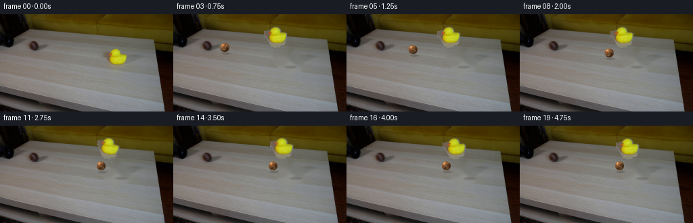
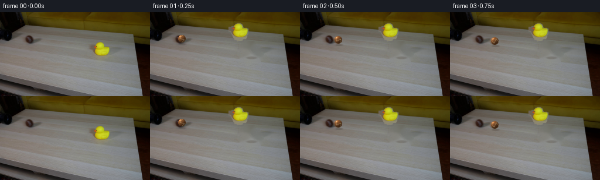
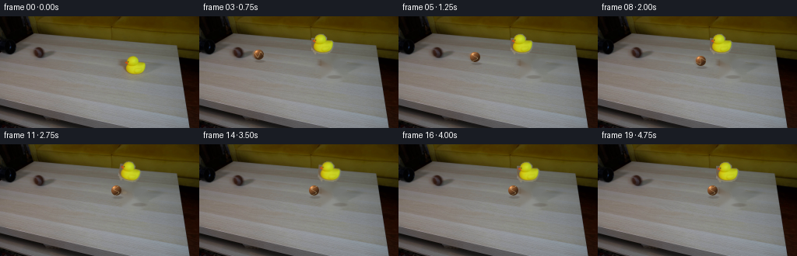
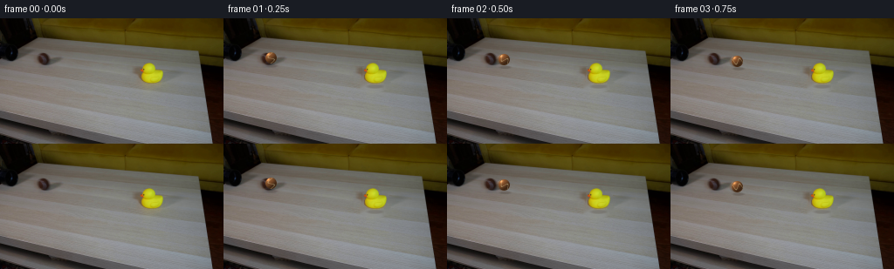

CODING AGENTS AS PIXEL WORLD MODELS
traex/DeepSeek-V4.1-Flash · 0009
点击播放 · 原生 RGB 像素
逐轮保存的候选
回放视频、检查图与代码变化。
每份候选均可单独播放。实际图片检查记录在下方工具轨迹中。
候选 01播放与检查图
点击播放 · 原生 RGB 像素

展开代码变化
--- 上一保存版本
+++ 本次保存版本
@@ -0,0 +1,280 @@
+from pathlib import Path
+
+import cv2
+import numpy as np
+from PIL import Image
+
+import artifact_io
+
+
+ROOT = Path(__file__).resolve().parent
+WIDTH, HEIGHT, FRAME_COUNT = 256, 144, 20
+
+
+def smoothstep(edge0, edge1, x):
+ t = np.clip((x - edge0) / (edge1 - edge0), 0.0, 1.0)
+ return t * t * (3.0 - 2.0 * t)
+
+
+def soft_ellipse(width, height, cx, cy, rx, ry, opacity):
+ yy, xx = np.mgrid[:height, :width]
+ radius = np.sqrt(((xx - cx) / max(rx, 1e-3)) ** 2 + ((yy - cy) / max(ry, 1e-3)) ** 2)
+ alpha = (1.0 - smoothstep(0.45, 1.0, radius)) * opacity
+ return alpha.astype(np.float32)
+
+
+def alpha_composite(image, color, alpha):
+ alpha = alpha[..., None]
+ return image * (1.0 - alpha) + np.asarray(color, dtype=np.float32) * alpha
+
+
+def extract_duck(image):
+ crop_x0, crop_y0, crop_x1, crop_y1 = 154, 44, 194, 82
+ crop = image[crop_y0:crop_y1, crop_x0:crop_x1]
+ hsv = cv2.cvtColor(crop, cv2.COLOR_RGB2HSV)
+ hue, saturation, value = cv2.split(hsv)
+
+ yellow = (
+ (hue >= 18)
+ & (hue <= 48)
+ & (saturation >= 45)
+ & (value >= 70)
+ )
+ orange_beak = (
+ (hue <= 22)
+ & (saturation >= 45)
+ & (value >= 42)
+ & (np.indices(yellow.shape)[1] < 12)
+ )
+ mask = (yellow | orange_beak).astype(np.uint8) * 255
+ mask = cv2.morphologyEx(mask, cv2.MORPH_CLOSE, np.ones((3, 3), np.uint8))
+
+ contours, _ = cv2.findContours(mask, cv2.RETR_EXTERNAL, cv2.CHAIN_APPROX_SIMPLE)
+ filled = np.zeros_like(mask)
+ if contours:
+ cv2.drawContours(filled, contours, -1, 255, cv2.FILLED)
+ filled = cv2.dilate(filled, np.ones((2, 2), np.uint8), iterations=1)
+
+ alpha = filled.astype(np.float32) / 255.0
+ alpha = cv2.GaussianBlur(alpha, (3, 3), 0.55)
+ alpha = np.clip(alpha * 1.15, 0.0, 1.0)
+
+ # The rubber duck's soft contact shadow is replaced procedurally.
+ removal = np.zeros(image.shape[:2], dtype=np.uint8)
+ removal[crop_y0:crop_y1, crop_x0:crop_x1] = filled
+ cv2.ellipse(
+ removal,
+ (crop_x0 + 20, crop_y0 + 33),
+ (20, 6),
+ 0,
+ 0,
+ 360,
+ 255,
+ -1,
+ )
+ removal = cv2.dilate(removal, np.ones((5, 5), np.uint8), iterations=1)
+
+ background = cv2.inpaint(image, removal, 5, cv2.INPAINT_TELEA)
+ return background, crop, alpha
+
+
+def make_ball_sprite(radius=6.5, spin=0.0):
+ scale = 4
+ size = int(np.ceil(radius * 2.0 + 4.0))
+ big_size = size * scale
+ yy, xx = np.mgrid[:big_size, :big_size]
+ cx = (big_size - 1) / 2.0
+ cy = (big_size - 1) / 2.0
+ nx = (xx - cx) / (radius * scale)
+ ny = (yy - cy) / (radius * scale)
+ rr = nx * nx + ny * ny
+ inside = rr <= 1.0
+ nz = np.sqrt(np.clip(1.0 - rr, 0.0, 1.0))
+
+ light = np.array([-0.50, -0.62, 0.60], dtype=np.float32)
+ light /= np.linalg.norm(light)
+ lambert = np.clip(nx * light[0] + ny * light[1] + nz * light[2], 0.0, 1.0)
+ rim = np.clip(1.0 - nz, 0.0, 1.0)
+ highlight = np.power(np.clip(lambert, 0.0, 1.0), 22.0)
+
+ base = np.array([126.0, 78.0, 43.0], dtype=np.float32)
+ color = base[None, None, :] * (0.42 + 0.72 * lambert[..., None])
+ color += np.array([26.0, 17.0, 8.0], dtype=np.float32) * rim[..., None]
+ color += np.array([118.0, 92.0, 62.0]) * highlight[..., None]
+
+ # A rotating, curved tennis seam, kept subtle at this display size.
+ c, s = np.cos(spin), np.sin(spin)
+ qx = c * nx + s * ny
+ qy = -s * nx + c * ny
+ seam_curve = 0.48 * np.sin(qy * np.pi * 1.45 + 0.45)
+ seam_distance = np.abs(qx - seam_curve)
+ seam = np.exp(-(seam_distance / 0.085) ** 2) * (nz > 0.12)
+ seam_color = np.array([218.0, 204.0, 154.0], dtype=np.float32)
+ color = color * (1.0 - 0.60 * seam[..., None]) + seam_color * (0.60 * seam[..., None])
+
+ # Fine felt variation, deterministic and very low contrast.
+ noise = (
+ np.sin(xx * 1.73 + yy * 0.41)
+ + np.sin(xx * 0.37 - yy * 1.91)
+ + 0.6 * np.sin(xx * 3.17 + yy * 2.63)
+ )
+ color += noise[..., None] * np.array([2.1, 1.5, 0.8], dtype=np.float32)
+
+ color = np.clip(color, 0, 255)
+ alpha = np.clip((1.0 - rr) * radius * scale * 0.85 + 0.35, 0.0, 1.0)
+ alpha *= inside
+ sprite = np.dstack([color, alpha * 255.0]).astype(np.uint8)
+ sprite = cv2.resize(sprite, (size, size), interpolation=cv2.INTER_AREA)
+ return sprite.astype(np.float32) / 255.0
+
+
+def blend_premultiplied(target, sprite, x, y, opacity=1.0):
+ h, w = sprite.shape[:2]
+ x0, y0 = int(round(x)), int(round(y))
+ x1, y1 = x0 + w, y0 + h
+ tx0, ty0 = max(0, x0), max(0, y0)
+ tx1, ty1 = min(target.shape[1], x1), min(target.shape[0], y1)
+ if tx1 <= tx0 or ty1 <= ty0:
+ return
+ sx0, sy0 = tx0 - x0, ty0 - y0
+ sx1, sy1 = sx0 + tx1 - tx0, sy0 + ty1 - ty0
+ patch = sprite[sy0:sy1, sx0:sx1]
+ color = patch[..., :3]
+ alpha = patch[..., 3:4] * opacity
+ target[ty0:ty1, tx0:tx1] = target[ty0:ty1, tx0:tx1] * (1.0 - alpha) + color * 255.0 * alpha
+
+
+def place_duck(frame, background, crop, alpha, dx, dy, angle, squash):
+ h, w = crop.shape[:2]
+ rgba = np.dstack([crop.astype(np.float32), alpha * 255.0])
+ rgba[..., :3] *= alpha[..., None]
+
+ base_x, base_y = 20.0, 32.0
+ matrix = cv2.getRotationMatrix2D((base_x, base_y), angle, 1.0)
+ matrix[0, 0] *= squash
+ matrix[0, 1] *= 1.0 / max(squash, 1e-3)
+ matrix[0, 2] += 154.0 + dx - base_x
+ matrix[1, 2] += 44.0 + dy - base_y
+
+ warped = cv2.warpAffine(
+ rgba,
+ matrix,
+ (WIDTH, HEIGHT),
+ flags=cv2.INTER_LINEAR,
+ borderMode=cv2.BORDER_CONSTANT,
+ borderValue=(0, 0, 0, 0),
+ )
+ color = warped[..., :3]
+ warped_alpha = np.clip(warped[..., 3] / 255.0, 0.0, 1.0)
+ color = np.divide(color, np.maximum(warped_alpha[..., None], 1e-4))
+ frame[:] = frame * (1.0 - warped_alpha[..., None]) + np.clip(color, 0, 255) * warped_alpha[..., None]
+
+
+def draw_ball_shadow(frame, x, table_y, radius):
+ shadow = soft_ellipse(WIDTH, HEIGHT, x + 1.0, table_y + 2.2, radius * 1.45, 2.5, 0.27)
+ frame[:] = alpha_composite(frame, (62, 50, 42), shadow)
+
+
+def draw_duck_shadow(frame, x, y, angle):
+ offset = np.sin(np.deg2rad(angle)) * 4.0
+ shadow = soft_ellipse(WIDTH, HEIGHT, x + offset, y + 1.8, 12.5, 3.2, 0.23)
+ frame[:] = alpha_composite(frame, (64, 51, 39), shadow)
+
+
+def main():
+ first = np.asarray(Image.open(ROOT / "first_frame.png").convert("RGB"))
+ background, duck_crop, duck_alpha = extract_duck(first)
+ background = background.astype(np.float32)
+
+ ball_cache = {}
+ frames = []
+ impact_frame = 10
+ start_x = 54.0
+ impact_x = 155.0
+
+ for index in range(FRAME_COUNT):
+ if index == 0:
+ frames.append(first.copy())
+ continue
+
+ frame = background.copy()
+
+ if index <= impact_frame:
+ travel = (index - 1) / float(impact_frame - 1)
+ ball_x = start_x + (impact_x - start_x) * travel
+ ball_velocity = (impact_x - start_x) / float(impact_frame - 1)
+ else:
+ after = (index - impact_frame) / 4.0
+ ball_x = impact_x - 7.5 * (1.0 - np.exp(-4.5 * after))
+ ball_velocity = 7.5 * 4.5 * np.exp(-4.5 * after) / 4.0
+
+ table_y = 52.0 + 0.145 * (ball_x - start_x)
+ ball_y = table_y - 6.1
+
+ duck_dx = duck_dy = 0.0
+ duck_angle = 0.0
+ duck_squash = 1.0
+ if index >= impact_frame:
+ t = (index - impact_frame) / 4.0
+ envelope = np.exp(-1.30 * t)
+ duck_dx = 8.2 * (1.0 - np.exp(-5.0 * t)) + 1.4 * envelope * np.sin(10.0 * t)
+ duck_dy = -1.6 * envelope * abs(np.sin(11.0 * t))
+ duck_angle = -17.0 * envelope * np.sin(8.2 * t)
+ duck_squash = 1.0 + 0.045 * envelope * np.sin(15.0 * t)
+
+ draw_duck_shadow(frame, 173.0 + duck_dx, 76.0 + duck_dy, duck_angle)
+ place_duck(
+ frame,
+ background,
+ duck_crop,
+ duck_alpha,
+ duck_dx,
+ duck_dy,
+ duck_angle,
+ duck_squash,
+ )
+
+ draw_ball_shadow(frame, ball_x, table_y, 6.2)
+
+ # Short directional trail gives the low-frame-rate motion a readable roll.
+ if index < impact_frame and index > 1:
+ trail = 3.0
+ for step, opacity in ((-trail, 0.11), (-trail * 0.5, 0.18)):
+ spin = -0.38 * (ball_x + step) / 6.0
+ key = round(spin, 2)
+ sprite = ball_cache.setdefault(key, make_ball_sprite(spin=key))
+ blend_premultiplied(frame, sprite, ball_x + step - 8.5, ball_y - 8.5, opacity)
+
+ spin = -0.38 * ball_x / 6.0
+ sprite = ball_cache.setdefault(round(spin, 2), make_ball_sprite(spin=spin))
+ blend_premultiplied(frame, sprite, ball_x - 8.5, ball_y - 8.5, 1.0)
+
+ # A tiny warm glint where the ball meets the rubber body.
+ if 9 <= index <= 12:
+ pulse = 1.0 - abs(index - impact_frame) / 2.5
+ glint = soft_ellipse(WIDTH, HEIGHT, 159.5, 62.0, 4.0, 2.6, 0.14 * max(pulse, 0.0))
+ frame[:] = alpha_composite(frame, (255, 233, 158), glint)
+
+ frames.append(np.clip(frame + 0.5, 0, 255).astype(np.uint8))
+
+ frames = np.stack(frames, axis=0)
+ assert frames.shape == (FRAME_COUNT, HEIGHT, WIDTH, 3)
+ assert frames.dtype == np.uint8
+ assert np.array_equal(frames[0], first)
+
+ artifact_io.save(frames, ROOT)
+
+ writer = cv2.VideoWriter(
+ str(ROOT / "video.mp4"),
+ cv2.VideoWriter_fourcc(*"mp4v"),
+ 4.0,
+ (WIDTH, HEIGHT),
+ )
+ if writer.isOpened():
+ for frame in frames:
+ writer.write(cv2.cvtColor(frame, cv2.COLOR_RGB2BGR))
+ writer.release()
+
+
+if __name__ == "__main__":
+ main()
候选 02播放与检查图
点击播放 · 原生 RGB 像素


展开代码变化
--- 上一保存版本
+++ 本次保存版本
@@ -29,29 +29,33 @@
def extract_duck(image):
- crop_x0, crop_y0, crop_x1, crop_y1 = 154, 44, 194, 82
+ crop_x0, crop_y0, crop_x1, crop_y1 = 159, 48, 190, 80
crop = image[crop_y0:crop_y1, crop_x0:crop_x1]
hsv = cv2.cvtColor(crop, cv2.COLOR_RGB2HSV)
hue, saturation, value = cv2.split(hsv)
yellow = (
- (hue >= 18)
- & (hue <= 48)
- & (saturation >= 45)
- & (value >= 70)
+ (hue >= 20)
+ & (hue <= 42)
+ & (saturation >= 80)
+ & (value >= 90)
)
orange_beak = (
(hue <= 22)
& (saturation >= 45)
& (value >= 42)
- & (np.indices(yellow.shape)[1] < 12)
+ & (np.indices(yellow.shape)[1] < 5)
)
mask = (yellow | orange_beak).astype(np.uint8) * 255
mask = cv2.morphologyEx(mask, cv2.MORPH_CLOSE, np.ones((3, 3), np.uint8))
- contours, _ = cv2.findContours(mask, cv2.RETR_EXTERNAL, cv2.CHAIN_APPROX_SIMPLE)
+ count, labels, stats, _ = cv2.connectedComponentsWithStats(mask, 8)
filled = np.zeros_like(mask)
- if contours:
+ if count > 1:
+ largest = 1 + int(np.argmax(stats[1:, cv2.CC_STAT_AREA]))
+ filled[labels == largest] = 255
+ contours, _ = cv2.findContours(filled, cv2.RETR_EXTERNAL, cv2.CHAIN_APPROX_SIMPLE)
+ filled[:] = 0
cv2.drawContours(filled, contours, -1, 255, cv2.FILLED)
filled = cv2.dilate(filled, np.ones((2, 2), np.uint8), iterations=1)
@@ -64,8 +68,8 @@
removal[crop_y0:crop_y1, crop_x0:crop_x1] = filled
cv2.ellipse(
removal,
- (crop_x0 + 20, crop_y0 + 33),
- (20, 6),
+ (crop_x0 + 15, crop_y0 + 29),
+ (16, 4),
0,
0,
360,
@@ -149,12 +153,12 @@
rgba = np.dstack([crop.astype(np.float32), alpha * 255.0])
rgba[..., :3] *= alpha[..., None]
- base_x, base_y = 20.0, 32.0
+ base_x, base_y = 15.0, 28.0
matrix = cv2.getRotationMatrix2D((base_x, base_y), angle, 1.0)
matrix[0, 0] *= squash
matrix[0, 1] *= 1.0 / max(squash, 1e-3)
- matrix[0, 2] += 154.0 + dx - base_x
- matrix[1, 2] += 44.0 + dy - base_y
+ matrix[0, 2] += 159.0 + dx - base_x
+ matrix[1, 2] += 48.0 + dy - base_y
warped = cv2.warpAffine(
rgba,
候选 03播放与检查图

候选 04播放与检查图
点击播放 · 原生 RGB 像素

展开代码变化
--- 上一保存版本
+++ 本次保存版本
@@ -42,9 +42,10 @@
)
orange_beak = (
(hue <= 22)
- & (saturation >= 45)
+ & (saturation >= 100)
& (value >= 42)
& (np.indices(yellow.shape)[1] < 5)
+ & (np.indices(yellow.shape)[1] >= 2)
)
mask = (yellow | orange_beak).astype(np.uint8) * 255
mask = cv2.morphologyEx(mask, cv2.MORPH_CLOSE, np.ones((3, 3), np.uint8))
候选 05播放与检查图
候选 06播放与检查图
点击播放 · 原生 RGB 像素
展开代码变化
--- 上一保存版本
+++ 本次保存版本
@@ -158,8 +158,8 @@
matrix = cv2.getRotationMatrix2D((base_x, base_y), angle, 1.0)
matrix[0, 0] *= squash
matrix[0, 1] *= 1.0 / max(squash, 1e-3)
- matrix[0, 2] += 159.0 + dx - base_x
- matrix[1, 2] += 48.0 + dy - base_y
+ matrix[0, 2] += 159.0 + dx
+ matrix[1, 2] += 48.0 + dy
warped = cv2.warpAffine(
rgba,
候选 07播放与检查图
点击播放 · 原生 RGB 像素


展开代码变化
--- 上一保存版本
+++ 本次保存版本
@@ -64,22 +64,11 @@
alpha = cv2.GaussianBlur(alpha, (3, 3), 0.55)
alpha = np.clip(alpha * 1.15, 0.0, 1.0)
- # The rubber duck's soft contact shadow is replaced procedurally.
+ # Replace only the duck itself. The original low-contrast contact shadow
+ # remains as the resting reference and is supplemented by a moving shadow.
removal = np.zeros(image.shape[:2], dtype=np.uint8)
removal[crop_y0:crop_y1, crop_x0:crop_x1] = filled
- cv2.ellipse(
- removal,
- (crop_x0 + 15, crop_y0 + 29),
- (16, 4),
- 0,
- 0,
- 360,
- 255,
- -1,
- )
- removal = cv2.dilate(removal, np.ones((5, 5), np.uint8), iterations=1)
-
- background = cv2.inpaint(image, removal, 5, cv2.INPAINT_TELEA)
+ background = cv2.inpaint(image, removal, 3, cv2.INPAINT_TELEA)
return background, crop, alpha
候选 08播放与检查图
候选 09播放与检查图
点击播放 · 原生 RGB 像素
展开代码变化
--- 上一保存版本
+++ 本次保存版本
@@ -191,7 +191,9 @@
frames.append(first.copy())
continue
- frame = background.copy()
+ # Keep the untouched source frame until contact. In particular, avoid
+ # resampling the stationary duck or redrawing its shadow early.
+ frame = first.copy() if index <= impact_frame else background.copy()
if index <= impact_frame:
travel = (index - 1) / float(impact_frame - 1)
@@ -216,17 +218,18 @@
duck_angle = -17.0 * envelope * np.sin(8.2 * t)
duck_squash = 1.0 + 0.045 * envelope * np.sin(15.0 * t)
- draw_duck_shadow(frame, 173.0 + duck_dx, 76.0 + duck_dy, duck_angle)
- place_duck(
- frame,
- background,
- duck_crop,
- duck_alpha,
- duck_dx,
- duck_dy,
- duck_angle,
- duck_squash,
- )
+ if index > impact_frame:
+ draw_duck_shadow(frame, 173.0 + duck_dx, 76.0 + duck_dy, duck_angle)
+ place_duck(
+ frame,
+ background,
+ duck_crop,
+ duck_alpha,
+ duck_dx,
+ duck_dy,
+ duck_angle,
+ duck_squash,
+ )
draw_ball_shadow(frame, ball_x, table_y, 6.2)
可观测工具轨迹
实际执行的命令与返回图片。
命令 1exit 0
/bin/bash -c "pwd && rg --files -g '"'!*__pycache__*'"'"
命令 2exit 0
/bin/bash -c "sed -n '1,240p' GENERATION_RULES.md"
命令 3exit 0
/bin/bash -c "sed -n '1,240p' prompt.txt"
命令 4exit 127
/bin/bash -c "file first_frame.png && identify -verbose first_frame.png 2>/dev/null | sed -n '1,80p'"
命令 5exit 0
/bin/bash -c "sed -n '1,240p' artifact_io.py"
命令 6exit 0
/bin/bash -c "python - <<'PY'
from PIL import Image
import numpy as np
im=Image.open('first_frame.png')
print(im.mode, im.size)
a=np.asarray(im.convert('RGB'))
print(a.shape, a.dtype, a.min(), a.max())
# coarse 16x9 color grid averages
h,w=a.shape[:2]
for gy in range(9):
row=[]
for gx in range(16):
block=a[gy*h//9:(gy+1)*h//9, gx*w//16:(gx+1)*w//16]
c=block.reshape(-1,3).mean(0).astype(int)
row.append('%02x%02x%02x'%tuple(c))
print(' '.join(row))
PY"命令 7exit 0
/bin/bash -c "sed -n '1,220p' player_template.html"
命令 8exit 0
/bin/bash -c "python - <<'PY'
from PIL import Image
import numpy as np
from collections import Counter
im=np.asarray(Image.open('first_frame.png').convert('RGB'))
# quantized histogram
q=(im//16)*16+8
c=Counter(map(tuple,q.reshape(-1,3)))
for col,n in c.most_common(30): print(col,n,round(n/(im.shape[0]*im.shape[1])*100,1))
PY"命令 9exit 0
/bin/bash -c "python - <<'PY'
try:
import cv2; print('cv2',cv2.__version__)
except Exception as e: print('no cv2',e)
try:
import scipy; print('scipy',scipy.__version__)
except Exception as e: print('no scipy',e)
try:
import sklearn; print('sklearn',sklearn.__version__)
except Exception as e: print('no sklearn',e)
PY"命令 10exit 0
/bin/bash -c "python - <<'PY'
from PIL import Image
import numpy as np
im=np.asarray(Image.open('first_frame.png').convert('RGB')).astype(float)
# 64x36 downsample median/average; print ansi color blocks perhaps
h,w=im.shape[:2]
chars=' .:-=+*#%@'
gray=im.mean(2)
for y in range(0,h,4):
line=''
for x in range(0,w,4):
b=gray[y:min(y+4,h),x:min(x+4,w)]
line+=chars[min(9,int(b.mean()/256*10))]
print(line)
PY"命令 11exit 0
/bin/bash -c "python - <<'PY'
import cv2, numpy as np
im=cv2.imread('first_frame.png')
lab=cv2.cvtColor(im,cv2.COLOR_BGR2LAB)
Z=lab.reshape(-1,3).astype(np.float32)
# sample all or stratified
criteria=(cv2.TERM_CRITERIA_EPS+cv2.TERM_CRITERIA_MAX_ITER,100,0.2)
K=20
compact,labels,centers=cv2.kmeans(Z,K,None,criteria,10,cv2.KMEANS_PP_CENTERS)
labels=labels.reshape(im.shape[:2])
centers_bgr=cv2.cvtColor(centers.reshape(-1,1,3).astype(np.uint8),cv2.COLOR_LAB2BGR).reshape(-1,3)
# sort by count
for i in np.argsort(np.bincount(labels.ravel()))[::-1]:
m=labels==i
ys,xs=np.where(m)
bgr=centers_bgr[i]; rgb=bgr[::-1]
print(f'{i:2} n={m.sum():5} rgb={tuple(rgb)} bbox=({xs.min()},{ys.min()})-({xs.max()},{ys.max()}) meanx={xs.mean():.1f} meany={ys.mean():.1f}')
PY"命令 12exit 0
/bin/bash -c "python - <<'PY'
from PIL import Image
import numpy as np
im=np.asarray(Image.open('first_frame.png').convert('RGB')).astype(int)
# print RGB at grid every 16 x 8 with hex
for y in range(0,144,8):
print(f'{y:3}:', ' '.join('%02x%02x%02x'%tuple(im[min(y+4,143),min(x+8,255)]) for x in range(0,256,16)))
PY"命令 13exit 0
/bin/bash -c "python - <<'PY'
import cv2, numpy as np
im=cv2.imread('first_frame.png')
g=cv2.cvtColor(im,cv2.COLOR_BGR2GRAY)
# print binned grayscale 128x72 (2x2)
for y in range(0,144,2):
line=''
for x in range(0,256,2):
v=g[y:y+2,x:x+2].mean()
line+='@%#*+=-:. '[min(9,int(v/256*10))]
print(line)
PY"命令 14exit 0
/bin/bash -c "python - <<'PY'
from PIL import Image
import numpy as np
im=np.asarray(Image.open('first_frame.png').convert('RGB')).astype(int)
# Edge maps and object color masks stats around duck
for name,m in [
('yellow',(im[:,:,0]>120)&(im[:,:,1]>110)&(im[:,:,2]<80)),
('green',(im[:,:,1]>im[:,:,0]*1.2)&(im[:,:,1]>im[:,:,2]*2)),
('dark',(im.max(2)<50)),
('black',(im.max(2)<25)),
]:
ys,xs=np.where(m)
print(name,len(xs), 'bbox', (xs.min(),ys.min(),xs.max(),ys.max()) if len(xs) else None)
# bbox of strong yellow by x bins
m=(im[:,:,0]>120)&(im[:,:,1]>110)&(im[:,:,2]<80)
for y in range(40,82):
xs=np.where(m[y])[0]
if len(xs): print(y, xs.min(),xs.max(),len(xs))
PY"命令 15exit 0
/bin/bash -c "python - <<'PY'
import cv2, numpy as np
im=cv2.imread('first_frame.png')
g=cv2.cvtColor(im,cv2.COLOR_BGR2GRAY)
# black pipe candidate in left-mid: print grayscale ascii x0:140,y55:90
chars='@%#*+=-:. '
for y in range(54,94,2):
line=''
for x in range(0,150,2):
v=g[y:y+2,x:x+2].mean()
line+=chars[min(9,int(v/256*10))]
print(f'{y:02}',line)
PY"命令 16exit 0
/bin/bash -c "python - <<'PY'
import cv2, numpy as np
im=cv2.imread('first_frame.png')
# Sobel/edges coarse
g=cv2.cvtColor(im,cv2.COLOR_BGR2GRAY)
e=cv2.Canny(g,30,80)
for y in range(0,144,2):
line=''
for x in range(0,256,2):
line+='#' if e[y:y+2,x:x+2].max()>0 else ' '
print(line)
PY"命令 17exit 0
/bin/bash -c "python - <<'PY'
import cv2, numpy as np
im=cv2.imread('first_frame.png')
# print dominant edge orientations and Hough lines
edges=cv2.Canny(cv2.cvtColor(im,cv2.COLOR_BGR2GRAY),30,80)
lines=cv2.HoughLinesP(edges,1,np.pi/180,threshold=20,minLineLength=15,maxLineGap=4)
if lines is not None:
for l in lines[:80]:
x1,y1,x2,y2=l[0]
if 0<y1<100 or 0<y2<100:
print((x1,y1,x2,y2),'len',round(np.hypot(x2-x1,y2-y1),1),'ang',round(np.degrees(np.arctan2(y2-y1,x2-x1)),1))
PY"命令 18exit 0
/bin/bash -c "python - <<'PY'
import cv2, numpy as np
im=cv2.imread('first_frame.png')
# print table edge pixel colors at points
pts=[(0,0),(10,10),(20,20),(40,30),(50,50),(100,80),(150,100),(200,120),(250,140),(150,60),(175,65),(150,30),(220,100)]
for x,y in pts: print((x,y),im[y,x,::-1])
# mask likely black/green ball candidates excluding borders and duck, look blobs of dark saturated pixels
rgb=im[:,:,::-1].astype(int)
# object mask dark but not border: x<145, y60-120
m=(rgb.max(2)<80)&(np.indices(rgb.shape[:2])[1]<150)&(np.indices(rgb.shape[:2])[0]>55)
num,lab,stats,cents=cv2.connectedComponentsWithStats(m.astype(np.uint8),8)
for i in range(1,num):
x,y,w,h,area=stats[i]
if area>10: print('blob',i,area,(x,y,w,h),cents[i])
PY"命令 19exit 0
/bin/bash -c "python - <<'PY'
from PIL import Image
import numpy as np
im=np.asarray(Image.open('first_frame.png').convert('RGB'))
# Print high saturation pixels outside yellow duck, by hue
import cv2
hsv=cv2.cvtColor(im,cv2.COLOR_RGB2HSV)
h,s,v=hsv[:,:,0],hsv[:,:,1],hsv[:,:,2]
for lo,hi,name in [(0,10,'red'),(10,25,'orange'),(25,40,'yellow'),(40,90,'green'),(90,130,'cyan'),(130,170,'blue'),(170,180,'magenta')]:
m=(h>=lo)&(h<hi)&(s>80)&(v>30)
ys,xs=np.where(m)
print(name,len(xs), (xs.min(),ys.min(),xs.max(),ys.max()) if len(xs) else '')
PY"命令 20exit 0
/bin/bash -c "python - <<'PY'
import cv2, numpy as np
im=cv2.imread('first_frame.png')
# display color segmentation classes via nearest palette rough
rgb=im[:,:,::-1]
# K=12 Lab map print compact labels as ascii where each cluster has char
lab=cv2.cvtColor(im,cv2.COLOR_BGR2LAB).reshape(-1,3).astype(np.float32)
criteria=(cv2.TERM_CRITERIA_EPS+cv2.TERM_CRITERIA_MAX_ITER,100,.2)
_,labels,centers=cv2.kmeans(lab,12,None,criteria,10,cv2.KMEANS_PP_CENTERS)
labels=labels.reshape(im.shape[:2])
centers_bgr=cv2.cvtColor(centers.reshape(-1,1,3).astype(np.uint8),cv2.COLOR_LAB2BGR).reshape(-1,3)
# assign chars sorted brightness
idx=np.argsort(centers_bgr.mean(1))
chars=' .:-=+*#%@&"'$'"'
mp={i:chars[j] for j,i in enumerate(idx)}
for i in idx: print(mp[i],centers_bgr[i,::-1])
for y in range(0,144,2):
print(''.join(mp[labels[y,x]] for x in range(0,256,2)))
PY"命令 21exit 0
/bin/bash -c "python - <<'PY'
import cv2, numpy as np
im=cv2.imread('first_frame.png')
rgb=im[:,:,::-1]
# Let's inspect rows for dark trough left area, values
for y in range(60,125,3):
vals=rgb[y,:145].mean(1)
# lowest 10 positions and values
ix=np.argsort(vals)[:10]
print('y',y,'dark',[(int(x),round(float(vals[x]),1)) for x in sorted(ix[:6])], 'avg',round(vals.mean(),1))
PY"命令 22exit 0
/bin/bash -c "python - <<'PY'
from PIL import Image
import numpy as np
im=np.asarray(Image.open('first_frame.png').convert('RGB')).astype(np.int16)
# Save edge-enhanced crops using permitted numeric local ops
from PIL import ImageFilter
for name,box in [('left',(0,35,155,130)),('duck',(145,40,205,90)),('table',(0,50,240,135))]:
c=Image.fromarray(im.astype(np.uint8)).crop(box)
c.resize((c.width*4,c.height*4),Image.Resampling.NEAREST).save('.tmp/'+name+'_crop.png')
c.filter(ImageFilter.UnsharpMask(radius=2,percent=180,threshold=2)).resize((c.width*4,c.height*4),Image.Resampling.NEAREST).save('.tmp/'+name+'_sharp.png')
print('wrote crops')
PY"命令 23exit 0
/bin/bash -c "python - <<'PY'
import cv2, numpy as np
im=cv2.imread('first_frame.png')
# pipe geometry via dark elongated regions: Hough on threshold
g=cv2.cvtColor(im,cv2.COLOR_BGR2GRAY)
for th in [40,60,80,100,120]:
m=(g<th).astype(np.uint8)*255
m=cv2.morphologyEx(m,cv2.MORPH_CLOSE,np.ones((3,3),np.uint8))
n,lab,stats,cents=cv2.connectedComponentsWithStats(m,8)
print('TH',th)
for i in range(1,n):
x,y,w,h,area=stats[i]
if area>80 and x<170 and y<130: print(i,area,(x,y,w,h),np.round(cents[i],1))
PY"命令 24exit 0
/bin/bash -c "python - <<'PY'
import cv2, numpy as np
im=cv2.imread('first_frame.png')
rgb=im[:,:,::-1]
# Print local RGB at pipe mouth area and left diagonal area every 8 px
for y in range(38,115,8):
print('y',y, ' '.join('%d,%d,%d'%tuple(rgb[y,x]) for x in range(0,170,16)))
PY"命令 25exit 0
/bin/bash -c "python - <<'PY'
from PIL import Image
import numpy as np
im=np.asarray(Image.open('first_frame.png').convert('RGB')).astype(float)
# quantify frame content with row/col gradients and local texture; list strongest horizontal edges per row
# pipe likely dark line across table? Find dark pixels not border/duck: x>30 y>55 and luminance<70
Y=im.mean(2)
for y in range(50,130):
xs=np.where(Y[y]<70)[0]
# group runs
runs=[]
if len(xs):
s=p=xs[0]
for x in xs[1:]:
if x>p+1: runs.append((s,p)); s=x
p=x
runs.append((s,p))
if any(b-a>=3 for a,b in runs): print(y,runs)
PY"命令 26exit 0
/bin/bash -c "python - <<'PY'
import cv2, numpy as np
im=cv2.imread('first_frame.png')
g=cv2.cvtColor(im,cv2.COLOR_BGR2GRAY).astype(float)
# Average luminance rows x0:140 and x 30:140
for y in range(45,115):
print(y, round(g[y,:140].mean(),1), round(g[y,40:140].mean(),1), round(g[y,80:140].mean(),1))
PY"命令 27exit 0
/bin/bash -c "python - <<'PY'
import cv2,numpy as np
im=cv2.imread('first_frame.png')
rgb=im[:,:,::-1].astype(float)
# try locate ball via color relation brown: R>G, G>B, saturated, near table. Print hue/sat bins in central x30-220,y55-120 excluding yellow duck
sub=rgb[55:121,30:221]
mx=sub.max(2); mn=sub.min(2); sat=(mx-mn)/(mx+1e-6)
# brown R>G>B and darker than table, sat>0.15
m=(sub[:,:,0]>sub[:,:,1]*1.05)&(sub[:,:,1]>sub[:,:,2]*1.05)&(sat>.12)&(mx<180)&(mx>30)
n,lab,stats,cents=cv2.connectedComponentsWithStats(m.astype(np.uint8),8)
for i in range(1,n):
x,y,w,h,a=stats[i]
if a>15: print(i,a,(x+30,y+55,w,h),cents[i]+[30,55])
# print stats top brown colors
from collections import Counter
q=(sub//16*16).astype(int)
c=Counter(map(tuple,q.reshape(-1,3)))
print(c.most_common(20))
PY"命令 28exit 0
/bin/bash -c "python - <<'PY'
import cv2, numpy as np
im=cv2.imread('first_frame.png')
# local patch text values as luminance x130:205 y44:80 step 2
for y in range(44,81,2):
line=''
for x in range(130,206,2):
v=cv2.cvtColor(im,cv2.COLOR_BGR2GRAY)[y:y+2,x:x+2].mean()
line+='@%#*+=-:. '[min(9,int(v/256*10))]
print(f'{y:02}',line)
PY"命令 29exit 0
/bin/bash -c "python - <<'PY'
import cv2,numpy as np
im=cv2.imread('first_frame.png')
g=cv2.cvtColor(im,cv2.COLOR_BGR2GRAY)
# Try circle detection at multiple thresholds/blur
for blur in [0,3,5]:
x=g if blur==0 else cv2.GaussianBlur(g,(blur,blur),0)
circles=cv2.HoughCircles(x,cv2.HOUGH_GRADIENT,dp=1,minDist=10,param1=50,param2=12,minRadius=3,maxRadius=20)
print('blur',blur)
if circles is not None:
for c in circles[0][:20]: print(tuple(np.round(c,1)))
PY"命令 30exit 0
/bin/bash -c "python - <<'PY'
import cv2,numpy as np
im=cv2.imread('first_frame.png')
# brown-ish ball search using HSV hue ~ 5-25 sat>50 val<200, components
hsv=cv2.cvtColor(im,cv2.COLOR_BGR2HSV)
for lo,hi in [(0,20),(5,25),(0,15),(10,30)]:
m=((hsv[:,:,0]>=lo)&(hsv[:,:,0]<=hi)&(hsv[:,:,1]>50)&(hsv[:,:,2]>30)&(hsv[:,:,2]<190)).astype(np.uint8)
m=cv2.morphologyEx(m,cv2.MORPH_CLOSE,np.ones((3,3),np.uint8))
n,lab,stats,cents=cv2.connectedComponentsWithStats(m,8)
print('range',lo,hi)
for i in range(1,n):
x,y,w,h,a=stats[i]
if a>15 and x>30: print(a,(x,y,w,h),np.round(cents[i],1))
PY"命令 31exit 0
/bin/bash -c "python - <<'PY'
import cv2,numpy as np
im=cv2.imread('first_frame.png')
rgb=im[:,:,::-1]
# print colors around duck bottom to separate shadow
for y in range(70,90,2):
print('y',y,' '.join('%02x%02x%02x'%tuple(rgb[y,x]) for x in range(155,191,3)))
PY"命令 32exit 0
/bin/bash -c "python - <<'PY'
import cv2, numpy as np
im=cv2.imread('first_frame.png')
rgb=im[:,:,::-1]
# circles from yellow segmentation
m=((rgb[:,:,0]>120)&(rgb[:,:,1]>110)&(rgb[:,:,2]<80)).astype(np.uint8)*255
contours,_=cv2.findContours(m,cv2.RETR_EXTERNAL,cv2.CHAIN_APPROX_SIMPLE)
for c in contours:
if cv2.contourArea(c)>30:
print('contour area',cv2.contourArea(c),'bbox',cv2.boundingRect(c))
(x,y),r=cv2.minEnclosingCircle(c); print('circle',x,y,r)
# ellipse
if len(c)>=5: print('ellipse',cv2.fitEllipse(c))
PY"命令 33exit 0
/bin/bash -c "python - <<'PY'
import cv2,numpy as np
im=cv2.imread('first_frame.png')
g=cv2.cvtColor(im,cv2.COLOR_BGR2GRAY)
# examine Hough circles around table region and colors at center
for c in [(39.5,51.5,13.4),(173.5,63.5,11.6),(58.5,38.5,12.7),(11.5,39.5,9.1)]:
x,y,r=c; xi,yi=int(x),int(y)
print(c, im[yi,xi,::-1], g[yi,xi])
PY"命令 34exit 0
/bin/bash -c "python - <<'PY'
import cv2,numpy as np
im=cv2.imread('first_frame.png')
rgb=im[:,:,::-1]
# print most likely ball area colors y60-110 x30-150 quantized smaller; look for distinct brown saturated. show saturation map chars
hsv=cv2.cvtColor(im,cv2.COLOR_BGR2HSV)
s=hsv[:,:,1]; v=hsv[:,:,2]
chars=' .:-=+*#%@'
for y in range(50,121,2):
line=''
for x in range(20,151,2):
# score brown: sat
val=s[y:y+2,x:x+2].mean()
line+=chars[min(9,int(val/256*10))]
print(f'{y:03}',line)
PY"命令 35exit 0
/bin/bash -c "python - <<'PY'
import cv2, numpy as np
im=cv2.imread('first_frame.png')
hsv=cv2.cvtColor(im,cv2.COLOR_BGR2HSV)
# hue map, encode hue every 10 degrees chars, only sat>25
chars='0123456789ABCDEFGH'
for y in range(50,121,2):
line=''
for x in range(20,151,2):
hh=hsv[y:y+2,x:x+2,0].mean(); ss=hsv[y:y+2,x:x+2,1].mean()
line+=chars[min(17,int(hh/10))] if ss>25 else ' '
print(f'{y:03}',line)
PY"命令 36exit 0
/bin/bash -c "python - <<'PY'
import cv2,numpy as np
im=cv2.imread('first_frame.png')
# annotate likely ball candidates: nearest region distinct brown around x? create all local minima of Laplacian etc maybe view via pixel crop not possible.
# print row runs where hue 0-15 sat>30 value 30-190, central
hsv=cv2.cvtColor(im,cv2.COLOR_BGR2HSV)
m=(hsv[:,:,0]<15)&(hsv[:,:,1]>30)&(hsv[:,:,2]>30)&(hsv[:,:,2]<190)
for y in range(55,121):
xs=np.where(m[y,20:180])[0]+20
runs=[]
if len(xs):
s=p=xs[0]
for x in xs[1:]:
if x>p+1:runs.append((s,p));s=x
p=x
runs.append((s,p))
if any(b-a>=5 for a,b in runs): print(y,runs)
PY"命令 37exit 0
/bin/bash -c "python - <<'PY'
import cv2,numpy as np
im=cv2.imread('first_frame.png')
# save 8-bit image maybe can't view, but can use tesseract? no
# Determine connected low-gradient flat region representing table top. print HSV means for likely scene surfaces at coordinates
pts=[(120,80),(120,90),(120,100),(120,110),(120,120),(80,70),(80,100),(200,80),(200,100),(200,120),(40,80),(40,100),(40,120),(10,60),(10,80),(10,100),(10,120),(225,70),(225,100),(225,120)]
hsv=cv2.cvtColor(im,cv2.COLOR_BGR2HSV)
for x,y in pts: print((x,y),'rgb',im[y,x,::-1],'hsv',hsv[y,x])
PY"命令 38exit 0
/bin/bash -c "python - <<'PY'
from PIL import Image
import numpy as np
im=np.asarray(Image.open('first_frame.png').convert('RGB'))
# print rows y around ball? color differences at x 40..140. Perhaps ball is at (42,46) according Hough; inspect 25x25
for y in range(34,60):
line=''
for x in range(30,70):
r,g,b=im[y,x]
if r>g*1.2 and g>b*1.2: c='R'
elif max(r,g,b)<50: c='#'
elif max(r,g,b)<80: c='x'
elif max(r,g,b)<110: c='+'
elif max(r,g,b)<140: c='-'
else: c='.'
line+=c
print(f'{y:02}',line)
PY"命令 39exit 0
/bin/bash -c "python - <<'PY'
from PIL import Image
import numpy as np
im=np.asarray(Image.open('first_frame.png').convert('RGB'))
for y in range(38,56):
print('y',y,[(x,tuple(im[y,x])) for x in range(42,66,2)])
PY"命令 40exit 0
/bin/bash -c "python - <<'PY'
from PIL import Image
import numpy as np
im=np.asarray(Image.open('first_frame.png').convert('RGB'))
# print ascii around x0:40 y35:55 hue/brown
for y in range(34,56):
line=''
for x in range(0,45):
r,g,b=im[y,x]
if r>g*1.2 and g>b*1.2: c='R'
elif max(r,g,b)<50: c='#'
elif max(r,g,b)<80: c='x'
elif max(r,g,b)<110: c='+'
elif max(r,g,b)<140: c='-'
else: c='.'
line+=c
print(f'{y:02}',line)
PY"命令 41exit 0
/bin/bash -c "python - <<'PY'
from PIL import Image
import numpy as np
im=np.asarray(Image.open('first_frame.png').convert('RGB'))
for y in range(40,54):
print('y',y,' '.join('%3d'%int(im[y,x].mean()) for x in range(0,40,2)))
PY"命令 42exit 0
/bin/bash -c "python - <<'PY'
import cv2,numpy as np
im=cv2.imread('first_frame.png')
# Sobel color difference: table light; find dark ball. candidate area x30:150 y55:115. Print pixels with local darkness relative blur
blur=cv2.GaussianBlur(im,(21,21),0).astype(float)
d=blur-im.astype(float)
s=d.mean(2)
# top negative locations
for y in range(55,115):
xs=np.where(s[y,20:180]>20)[0]+20
if len(xs): print(y,[(int(x),round(float(s[y,x]),1)) for x in xs[::max(1,len(xs)//10)]])
PY"命令 43exit 0
/bin/bash -c "python - <<'PY'
import cv2,numpy as np
im=cv2.imread('first_frame.png')
rgb=im[:,:,::-1]
# Print detailed RGB stats of 20x20 patches at candidate centers
for name,(cx,cy) in [('hough',(40,52)),('pipe',(163,65)),('leftlow',(42,84)),('mid',(100,90)),('mid2',(130,100))]:
p=rgb[cy-10:cy+11,cx-10:cx+11]
print(name,'mean',np.round(p.reshape(-1,3).mean(0),1),'min',p.reshape(-1,3).min(0),'max',p.reshape(-1,3).max(0),'std',np.round(p.reshape(-1,3).std(0),1))
PY"命令 44exit 0
/bin/bash -c "python - <<'PY'
from PIL import Image
import numpy as np
im=np.asarray(Image.open('first_frame.png').convert('RGB'))
# print ascii around x0:45 y35:56 using detailed thresholds
for y in range(35,56):
line=''
for x in range(0,48):
r,g,b=map(int,im[y,x])
if r>70 and r>g*1.15 and g>b*1.1: c='R'
elif max(r,g,b)<40: c='#'
elif max(r,g,b)<80: c='x'
elif max(r,g,b)<110: c='+'
elif max(r,g,b)<135: c='-'
else: c='.'
line+=c
print(f'{y:02}',line)
PY"命令 45exit 0
/bin/bash -c "python - <<'PY'
from PIL import Image
import numpy as np
im=np.asarray(Image.open('first_frame.png').convert('RGB')).astype(float)
Y=im.mean(2)
for y in range(0,90,2):
xs=np.where(Y[y]<70)[0]
# find prefix run from x0
maxx=-1
for x in xs:
if x==maxx+1 or maxx==-1: maxx=x
else: break
print(y,maxx, tuple(im[y,max(0,maxx)].astype(int)) if maxx>=0 else '')
PY"命令 46exit 0
/bin/bash -c "python - <<'PY'
from PIL import Image
import numpy as np
im=np.asarray(Image.open('first_frame.png').convert('RGB')).astype(float)
Y=im.mean(2)
for y in [24,30,36,40,44,46,48,50,52,54,56,60,70,80,90,100,110]:
# find left boundary where Y>100 after dark left
print('y',y,'first100',np.where(Y[y]>100)[0][:3], 'first120',np.where(Y[y]>120)[0][:3])
PY"命令 47exit 0
/bin/bash -c "python - <<'PY'
from PIL import Image
import numpy as np
im=np.asarray(Image.open('first_frame.png').convert('RGB')).astype(float)
# radial color patches around x40,y46 maybe ball; examine whether spherical shading patterns
for cx,cy in [(48,46),(40,52)]:
print('center',cx,cy)
for y in range(cy-8,cy+9,2):
print(' '.join('%3d'%int(im[y,x].mean()) for x in range(cx-8,cx+9,2)))
PY"命令 48exit 0
/bin/bash -c "python - <<'PY'
import cv2,numpy as np
im=cv2.imread('first_frame.png')
g=cv2.cvtColor(im,cv2.COLOR_BGR2GRAY)
H,W=g.shape
yy,xx=np.indices(g.shape)
for th in [70,80,90,100,110]:
m=(g<th)&(xx>25)&(xx<225)&(yy>45)&(yy<130)
m=m.astype(np.uint8)
m=cv2.morphologyEx(m,cv2.MORPH_OPEN,np.ones((2,2),np.uint8))
n,lab,stats,cents=cv2.connectedComponentsWithStats(m,8)
print('TH',th)
for i in range(1,n):
x,y,w,h,a=stats[i]
if a>15: print(' ',a,(x,y,w,h),tuple(np.round(cents[i],1)))
PY"命令 49exit 0
/bin/bash -c "python - <<'PY'
import cv2,numpy as np
im=cv2.imread('first_frame.png')
g=cv2.cvtColor(im,cv2.COLOR_BGR2GRAY)
# Gradient magnitude and local color texture around candidates; circle (40,52) perhaps not object
for cx,cy,r in [(48,46,10),(40,52,14),(160,63,7),(174,63,13),(50,50,15)]:
x0=max(0,cx-r);x1=min(256,cx+r);y0=max(0,cy-r);y1=min(144,cy+r)
p=im[y0:y1,x0:x1]
print((cx,cy,r),'mean',p.reshape(-1,3).mean(0)[::-1].round(1),'std',p.reshape(-1,3).std(0)[::-1].round(1),'grad',cv2.Laplacian(cv2.cvtColor(p,cv2.COLOR_BGR2GRAY),cv2.CV_64F).var())
PY"命令 50exit 0
/bin/bash -c "python - <<'PY'
from PIL import Image
import numpy as np
im=np.asarray(Image.open('first_frame.png').convert('RGB')).astype(int)
# inspect low chromatic rows: y48-55 x0:70 RGB values every 4, maybe table edge
for y in range(44,57):
print('y',y)
for x in range(0,72,8): print(x,tuple(im[y,x]),end='; ')
print()
PY"命令 51exit 0
/bin/bash -c "python - <<'PY'
from PIL import Image
import numpy as np
im=np.asarray(Image.open('first_frame.png').convert('RGB')).astype(float)
# crop stats: detect shadow/dark cluster around (48,46)
for name,box in [('obj',(38,36,60,56)),('around',(24,30,74,60)),('table',(80,70,120,110)),('duck',(160,50,188,76))]:
x0,y0,x1,y1=box;p=im[y0:y1,x0:x1]
print(name,'shape',p.shape,'mean',p.reshape(-1,3).mean(0).round(1),'median',np.median(p.reshape(-1,3),0),'q10',np.percentile(p.reshape(-1,3),10,axis=0).round(1),'q90',np.percentile(p.reshape(-1,3),90,axis=0).round(1))
PY"命令 52exit 0
/bin/bash -c "python - <<'PY'
from PIL import Image
import numpy as np
im=np.asarray(Image.open('first_frame.png').convert('RGB')).astype(float)
Y=im.mean(2)
# test circularity of dark pixels around x40,48; radial profiles
for cx,cy in [(49,46),(49,49),(52,50)]:
print('center',cx,cy)
for ang in range(0,360,45):
vals=[]
for r in range(0,20):
x=round(cx+r*np.cos(np.deg2rad(ang)));y=round(cy+r*np.sin(np.deg2rad(ang)))
if 0<=x<256 and 0<=y<144:vals.append(Y[y,x])
print(ang,' '.join('%3d'%int(v) for v in vals))
PY"命令 53exit 0
/bin/bash -c "python - <<'PY'
import cv2,numpy as np
im=cv2.imread('first_frame.png')
# Identify true pipe based on near-black elongated region maybe y43-54 x? Use threshold 50 and print runs per row x40..220
g=cv2.cvtColor(im,cv2.COLOR_BGR2GRAY)
for y in range(30,70):
xs=np.where(g[y,35:225]<60)[0]+35
runs=[]
if len(xs):
s=p=xs[0]
for x in xs[1:]:
if x>p+1:runs.append((s,p));s=x
p=x
runs.append((s,p))
if any(b-a>=4 for a,b in runs): print(y,runs)
PY"命令 54exit 0
/bin/bash -c "python - <<'PY'
import cv2,numpy as np
im=cv2.imread('first_frame.png')
g=cv2.cvtColor(im,cv2.COLOR_BGR2GRAY)
# dark blob center 50,46 size 13 maybe tennis ball? print HSV/RGB center
hsv=cv2.cvtColor(im,cv2.COLOR_BGR2HSV)
for y in range(40,54,2):
print('y',y,' '.join('%02x%02x%02x'%tuple(im[y,x,::-1]) for x in range(42,60,2)))
print('mean center',im[41:52,44:56,::-1].reshape(-1,3).mean(0))
PY"命令 55exit 0
/bin/bash -c "python - <<'PY'
from PIL import Image
import numpy as np
im=np.asarray(Image.open('first_frame.png').convert('RGB')).astype(float)
Y=im.mean(2)
# print gradient at left boundary by row: table starts x?
for y in range(50,114,2):
d=np.diff(Y[y,:180])
ix=np.argsort(np.abs(d))[-8:]
print(y, [(int(x),int(d[x])) for x in sorted(ix)])
PY"命令 56exit 0
/bin/bash -c "python - <<'PY'
import cv2,numpy as np
im=cv2.imread('first_frame.png')
rgb=im[:,:,::-1].astype(float)
# test ball candidate by local structure: compare mean patch to ring and color ratios
for cy in range(40,110,4):
vals=[]
for cx in range(35,160,4):
p=rgb[cy-5:cy+6,cx-5:cx+6]
if p.shape[:2]"'!=(11,11): continue
mean=p.reshape(-1,3).mean(0)
# brownness saturation
brown=mean[0]-mean[2]
contrast=135-mean.mean()
if brown>5 and contrast>5: vals.append((round(brown,1),round(contrast,1),cx,cy,tuple(mean.round(0).astype(int))))
if vals: print(cy,sorted(vals,reverse=True)[:5])
PY'命令 57exit 0
/bin/bash -c "python - <<'PY'
import cv2,numpy as np
im=cv2.imread('first_frame.png')
# Generate diagnostic color-map: pixels with high saturation around table are likely objects, write bbox masks
rgb=im[:,:,::-1]
hsv=cv2.cvtColor(im,cv2.COLOR_BGR2HSV)
for name,m in [('sat',hsv[:,:,1]>30),('dark',hsv[:,:,2]<80),('brown',(rgb[:,:,0]>rgb[:,:,1]*1.1)&(rgb[:,:,1]>rgb[:,:,2]*1.1)&(hsv[:,:,1]>20))]:
out=np.zeros_like(im)
out[m]=im[m]
cv2.imwrite('.tmp/'+name+'.png',out)
# stats components
n,lab,stats,cents=cv2.connectedComponentsWithStats(m.astype(np.uint8),8)
print(name)
for i in range(1,n):
x,y,w,h,a=stats[i]
if a>25:print(a,(x,y,w,h),np.round(cents[i],1))
PY"命令 58exit 0
/bin/bash -c "python - <<'PY'
from PIL import Image
import numpy as np
im=np.asarray(Image.open('first_frame.png').convert('RGB'))
# HSV-ish map only region x30:150 y50:120 for high saturation, ascii chars grouped by hue/lightness
import cv2
hsv=cv2.cvtColor(im,cv2.COLOR_RGB2HSV)
for y in range(50,121,2):
line=''
for x in range(30,151,2):
h,s,v=hsv[y:y+2,x:x+2].reshape(-1,3).mean(0)
if s<18: c=' '
elif h<8: c='r'
elif h<18: c='o'
elif h<35: c='y'
elif h<90: c='g'
elif h<130: c='b'
else: c='m'
line+=c
print(f'{y:03}',line)
PY"命令 59exit 0
/bin/bash -c "python - <<'PY'
import cv2, numpy as np
im=cv2.imread('first_frame.png')
# cluster pixels in central object region 25:75,35:60 and list centers in RGB/HSV with coordinates
from collections import Counter
p=im[35:60,25:75,::-1]
q=(p//16*16)
c=Counter(map(tuple,q.reshape(-1,3)))
for col,n in c.most_common(20): print(col,n)
PY"命令 60exit 0
/bin/bash -c "python - <<'PY'
from PIL import Image
import numpy as np
im=np.asarray(Image.open('first_frame.png').convert('RGB'))
# inspect row 70..110 column profiles find object-like local deviations from smooth surface
Y=im.mean(2)
for y in range(54,112,4):
vals=Y[y,:180]
# residual from median filter size 21
import scipy.ndimage as ndi
res=vals-ndi.median_filter(vals,size=21)
ix=np.where(np.abs(res)>5)[0]
runs=[]
if len(ix):
s=p=ix[0]
for x in ix[1:]:
if x>p+1:runs.append((s,p));s=x
p=x
runs.append((s,p))
print(y,[(a,b,round(float(res[a:b+1].min()),1),round(float(res[a:b+1].max()),1)) for a,b in runs if b-a>=1])
PY"命令 61exit 0
/bin/bash -c "python - <<'PY'
from PIL import Image
import numpy as np
im=np.asarray(Image.open('first_frame.png').convert('RGB'))
# Write enlarged frames for inspection if we can use image metadata? no. still save.
# detect ball by looking for pixels with dark center and high saturation in lower central. compute local 13x13 circular patch variance / mean
import cv2
Y=im.mean(2)
best=[]
for cy in range(60,111,2):
for cx in range(25,151,2):
yy,xx=np.ogrid[-7:8,-7:8];mask=xx*xx+yy*yy<=49
p=im[cy-7:cy+8,cx-7:cx+8][mask]
if p.shape[0]"'!=113: continue
mean=p.mean(0); std=p.std(0)
# candidate dark object but not shadow: low mean and significant texture
score=(140-mean.mean())+0.3*std.mean()
best.append((score,cx,cy,mean.round(0),std.round(0)))
print('"'best')
for x in sorted(best,reverse=True)[:30]:print(x)
PY"命令 62exit 0
/bin/bash -c "python - <<'PY'
from PIL import Image
import numpy as np
im=np.asarray(Image.open('first_frame.png').convert('RGB')).astype(float)
yy,xx=np.ogrid[-7:8,-7:8];mask=xx*xx+yy*yy<=49
best=[]
for cy in range(60,111,2):
for cx in range(25,151,2):
p=im[cy-7:cy+8,cx-7:cx+8][mask]
mean=p.mean(0); std=p.std(0)
score=(140-mean.mean())+0.2*std.mean()
best.append((score,cx,cy,tuple(mean.round(0).astype(int)),round(std.mean(),1)))
print('best')
for x in sorted(best,reverse=True)[:30]:print(x)
PY"命令 63exit 0
/bin/bash -c "python - <<'PY'
from PIL import Image
import numpy as np
im=np.asarray(Image.open('first_frame.png').convert('RGB')).astype(float)
Y=im.mean(2)
# print detailed x/y cross sections around dark blob 50,46
print('row46 x40-60',[(x,round(Y[46,x],1)) for x in range(40,61)])
print('col50 y36-58',[(y,round(Y[y,50],1)) for y in range(36,59)])
PY"命令 64exit 0
/bin/bash -c "python - <<'PY'
import cv2,numpy as np
im=cv2.imread('first_frame.png')
# inspect blue/magenta pixels and all hues in central lower
hsv=cv2.cvtColor(im,cv2.COLOR_BGR2HSV)
for y in range(55,121,3):
line=''
for x in range(25,151,2):
h,s,v=hsv[y:y+3,x:x+2].reshape(-1,3).mean(0)
if s>30 and 15<h<50: c='O'
elif s>30 and 50<=h<90: c='G'
elif s>30 and 90<=h<130: c='B'
elif s>30 and (h<15 or h>150): c='R'
elif v<80:c='#'
elif v<110:c='+'
elif v<130:c='-'
else:c='.'
line+=c
print(f'{y:03}',line)
PY"命令 65exit 0
/bin/bash -c "python - <<'PY'
from PIL import Image
import numpy as np
im=np.asarray(Image.open('first_frame.png').convert('RGB')).astype(float)
# Use all pixels in central region, PCA on RGB to see clusters? output colors of low luminance textured pixels.
# print patches for candidate centers as colored ascii based on RGB distance from table mean [139,136,132]
for cy,cx in [(46,50),(84,42),(63,160),(63,174)]:
print('patch',cx,cy)
for y in range(cy-7,cy+8):
line=''
for x in range(cx-7,cx+8):
p=im[y,x]
d=np.linalg.norm(p-[139,136,132])
if p[0]-p[2]>12 and p.mean()<110:c='R'
elif p.mean()<60:c='#'
elif d>25:c='o'
elif d>12:c='-'
else:c='.'
line+=c
print(line)
PY"命令 66exit 0
/bin/bash -c "python - <<'PY'
import cv2, numpy as np
im=cv2.imread('first_frame.png')
# Show RGB patch 30:65,32:60 numeric R,G,B via class mapping around dark blob
rgb=im[:,:,::-1]
for y in range(30,61,1):
line=''
for x in range(25,76,1):
r,g,b=map(int,rgb[y,x]); m=max(r,g,b)
if r>g*1.2 and g>b*1.2 and m>30: c='R'
elif m<45:c='#'
elif m<70:c='X'
elif m<95:c='x'
elif m<115:c='+'
elif m<130:c='-'
else:c='.'
line+=c
print(f'{y:02}',line)
PY"命令 67exit 0
/bin/bash -c "python - <<'PY'
from PIL import Image
import numpy as np
im=np.asarray(Image.open('first_frame.png').convert('RGB')).astype(float)
# Check first 25 columns, rows 35-60 whether image has synthetic vertical dark band (left border)
for y in range(30,65,2): print(y, np.round(im[y,0:25].mean(0),1))
PY"命令 68exit 0
/bin/bash -c "python - <<'PY'
from PIL import Image
import numpy as np
im=np.asarray(Image.open('first_frame.png').convert('RGB')).astype(float)
# Print hue/sat for x40:60 y38:54
import cv2
hsv=cv2.cvtColor(im.astype(np.uint8),cv2.COLOR_RGB2HSV)
for y in range(38,55):
print(y,' '.join(f'{hsv[y,x,0]:3d}/{hsv[y,x,1]:3d}' for x in range(40,60,2)))
PY"命令 69exit 0
/bin/bash -c "python - <<'PY'
import cv2,numpy as np
im=cv2.imread('first_frame.png')
# nearest neighboring color distance from exact image? likely generated synthetic low-quality. Use optical clues.
# Find all rounded objects as dark regions inside table excluding top/bottom by thresholding difference to table color with local chroma
rgb=im[:,:,::-1].astype(float)
table=np.array([138,136,132])
d=np.linalg.norm(rgb-table,axis=2)
# output components of d>25 inside central bounds x20:220 y45:110
m=(d>20)
yy,xx=np.indices(m.shape)
m &= (xx>20)&(xx<220)&(yy>45)&(yy<110)
m=cv2.morphologyEx(m.astype(np.uint8),cv2.MORPH_CLOSE,np.ones((3,3),np.uint8))
n,lab,stats,cents=cv2.connectedComponentsWithStats(m,8)
for i in range(1,n):
x,y,w,h,a=stats[i]
if a>20: print(a,(x,y,w,h),np.round(cents[i],1))
PY"命令 70exit 0
/bin/bash -c "python - <<'PY'
from PIL import Image
import numpy as np
im=np.asarray(Image.open('first_frame.png').convert('RGB')).astype(float)
# print table difference component bbox 78,102 40x8 details; maybe ball shadow?
for y in range(98,113):
line=''
for x in range(70,126):
d=np.linalg.norm(im[y,x]-[138,136,132])
line += '#' if d>40 else '+' if d>20 else '.' if d>8 else ' '
print(y,line)
PY"命令 71exit 0
/bin/bash -c "python - <<'PY'
from PIL import Image
import numpy as np, cv2
im=np.asarray(Image.open('first_frame.png').convert('RGB'))
hsv=cv2.cvtColor(im,cv2.COLOR_RGB2HSV)
# map x150:200 y42:85: Y yellow sat>50, O orange hue 10-25 sat>50, K dark <90, + colored sat>20, . background
for y in range(42,86):
line=''
for x in range(148,201):
h,s,v=hsv[y,x]
r,g,b=map(int,im[y,x])
if s>55 and 20<=h<=45: c='Y'
elif s>55 and h<20: c='O'
elif s>30: c='+'
elif v<80: c='K'
elif v<110: c='x'
elif v<125: c='-'
else: c='.'
line+=c
print(f'{y:02}',line)
PY"命令 72exit 0
/bin/bash -c "python - <<'PY'
from PIL import Image
import numpy as np
im=np.asarray(Image.open('first_frame.png').convert('RGB'))
# print table area x25:150 y60:110 as symbols based on RGB distances; larger 1 px, 125 chars manageable
for y in range(54,111):
line=''
for x in range(25,151):
r,g,b=map(int,im[y,x]); m=(r+g+b)/3
if m<55:c='#'
elif m<80:c='X'
elif m<105:c='x'
elif m<120:c='+'
elif m<132:c='-'
elif m<140:c='.'
else:c=' '
line+=c
print(f'{y:03}',line)
PY"命令 73exit 0
/bin/bash -c "python - <<'PY'
import cv2,numpy as np
im=cv2.imread('first_frame.png')
# color distance from local table, sample points and inspect ball maybe in first frame near x? Use blob detection on Laplacian with scale
rgb=im[:,:,::-1].astype(np.float32)
# local background via median 31 and residual color norm
bg=cv2.medianBlur(im,31)
res=np.linalg.norm(im.astype(float)-bg.astype(float),axis=2)
# threshold 10 components
m=(res>18).astype(np.uint8); yy,xx=np.indices(m.shape);m &= (xx>15)&(xx<220)&(yy>40)&(yy<115)
m=cv2.morphologyEx(m,cv2.MORPH_CLOSE,np.ones((3,3),np.uint8))
n,lab,stats,cents=cv2.connectedComponentsWithStats(m,8)
for i in range(1,n):
x,y,w,h,a=stats[i]
if a>30:print(a,(x,y,w,h),np.round(cents[i],1),'meanres',res[lab==i].mean())
PY"命令 74exit 0
/bin/bash -c "python - <<'PY'
from PIL import Image
import numpy as np
im=np.asarray(Image.open('first_frame.png').convert('RGB')).astype(float)
# component 31,41,40,13 likely pipe? inspect colors by rows and shape
for y in range(38,56):
line=''
for x in range(25,80):
r,g,b=im[y,x]
if r<60 and g<60 and b<60:c='#'
elif r<90:c='X'
elif r<110:c='x'
elif r<125:c='+'
elif r<140:c='-'
else:c='.'
line+=c
print(y,line)
PY"命令 75exit 0
/bin/bash -c "python - <<'PY'
import cv2, numpy as np
im=cv2.imread('first_frame.png')
# Analyze image dimensions & center transforms to infer table plane/pipe mouth via segmentation
rgb=im[:,:,::-1]
# Kmeans color segmentation in region x20:220,y35:115, output per cluster bbox and sample center
Z=rgb[35:115,20:220].reshape(-1,3).astype(np.float32)
criteria=(cv2.TERM_CRITERIA_EPS+cv2.TERM_CRITERIA_MAX_ITER,100,.2)
for K in [8,10,12]:
_,labels,centers=cv2.kmeans(Z,K,None,criteria,10,cv2.KMEANS_PP_CENTERS)
labels=labels.reshape(80,200)
print('K',K)
for i in range(K):
ys,xs=np.where(labels==i)
if len(xs)>30:
print(i,len(xs),np.round(centers[i],1), (xs.min()+20,ys.min()+35,xs.max()+20,ys.max()+35))
PY"命令 76exit 0
/bin/bash -c "python - <<'PY'
from PIL import Image
import numpy as np
im=np.asarray(Image.open('first_frame.png').convert('RGB')).astype(float)
# Print RGB central table sample to understand noise/palette: row 70-110 x40-150 downsample 2
for y in range(60,114,4):
print(y,' '.join('%02x%02x%02x'%tuple(im[y,x].astype(int)) for x in range(30,151,8)))
PY"命令 77exit 0
/bin/bash -c "python - <<'PY'
from PIL import Image
import numpy as np
im=np.asarray(Image.open('first_frame.png').convert('RGB')).astype(float)
# Create edge count per grid cell; infer table boundaries
import cv2
e=cv2.Canny(im.astype(np.uint8),40,100)
for y in range(0,144,8):
print(y, [int(e[y:y+8,x:x+8].sum()) for x in range(0,256,8)])
PY"命令 78exit 0
/bin/bash -c "python - <<'PY'
from PIL import Image
import numpy as np
im=np.asarray(Image.open('first_frame.png').convert('RGB')).astype(float)
# Find saturated green-ish pixels (tennis ball should be greenish yellow) not duck
r,g,b=im.transpose(2,0,1)
for name,m in [
('greenish',(g>r*1.05)&(g>b*1.4)&(g>70)),
('brown',(r>g*1.15)&(g>b*1.15)&(r>50)),
('brightyellow',(r>100)&(g>100)&(b<60)),
]:
ys,xs=np.where(m)
print(name,len(xs),(xs.min(),ys.min(),xs.max(),ys.max()) if len(xs) else None)
# comps
import cv2
n,lab,stats,cents=cv2.connectedComponentsWithStats(m.astype(np.uint8),8)
for i in range(1,n):
x,y,w,h,a=stats[i]
if a>20: print(' ',a,(x,y,w,h),np.round(cents[i],1))
PY"命令 79exit 1
/bin/bash -c 'python generate.py'
命令 80exit 0
/bin/bash -c 'python generate.py'
命令 81exit 0
/bin/bash -c "python - <<'PY'
from PIL import Image
import numpy as np
from pathlib import Path
im0=np.asarray(Image.open('first_frame.png').convert('RGB'))
f=np.asarray(Image.open('frames/00.png').convert('RGB'))
print('frame0 exact',np.array_equal(im0,f))
for i in [0,1,5,9,10,11,12,15,19]:
a=np.asarray(Image.open(f'frames/{i:02d}.png').convert('RGB')).astype(int)
b=np.asarray(Image.open(f'frames/{max(0,i-1):02d}.png').convert('RGB')).astype(int)
d=np.abs(a-b)
print(i,'changed',np.any(d>0,axis=2).sum(),'mean',round(d.mean(),2),'max',d.max())
print('inspection',Image.open('inspection.png').size,'transition',Image.open('transition_check.png').size)
PY"命令 82exit 0
/bin/bash -c "python - <<'PY'
from PIL import Image
import numpy as np
# Numeric audit of object coordinates from generated masks/colors
for i in [1,5,9,10,11,12,15,19]:
a=np.asarray(Image.open(f'frames/{i:02d}.png').convert('RGB')).astype(int)
base=np.asarray(Image.open('first_frame.png').convert('RGB')).astype(int)
d=np.abs(a-base).max(2)
ys,xs=np.where(d>15)
print(i,'bbox', (xs.min(),ys.min(),xs.max(),ys.max()) if len(xs) else None,'n',len(xs))
PY"命令 83exit 0
/bin/bash -c "python - <<'PY'
from PIL import Image
import numpy as np
a=np.asarray(Image.open('frames/01.png').convert('RGB')).astype(int)
b=np.asarray(Image.open('first_frame.png').convert('RGB')).astype(int)
d=np.abs(a-b).max(2)
for y in range(10,30):
xs=np.where(d[y]>15)[0]
if len(xs): print(y,xs.min(),xs.max(),[(int(x),tuple(a[y,x]),tuple(b[y,x])) for x in xs[:5]])
PY"命令 84exit 0
/bin/bash -c "python - <<'PY'
from PIL import Image
import numpy as np
a=np.asarray(Image.open('frames/01.png').convert('RGB')).astype(int)
b=np.asarray(Image.open('first_frame.png').convert('RGB')).astype(int)
d=np.abs(a-b).max(2)
for y in range(50,90):
xs=np.where(d[y]>15)[0]
if len(xs): print(y,xs.min(),xs.max(),len(xs))
PY"命令 85exit 0
/bin/bash -c "python - <<'PY'
import cv2, numpy as np
from PIL import Image
base=np.asarray(Image.open('first_frame.png').convert('RGB'))
a=np.asarray(Image.open('frames/01.png').convert('RGB'))
# create diff visualization and enlarged duck crops, allowed local numeric ops
for name,arr in [('base',base),('f01',a),('f10',np.asarray(Image.open('frames/10.png').convert('RGB'))),('f11',np.asarray(Image.open('frames/11.png').convert('RGB'))),('f19',np.asarray(Image.open('frames/19.png').convert('RGB')))]:
c=Image.fromarray(arr).crop((140,35,205,95))
c.resize((520,480),Image.Resampling.NEAREST).save('.tmp/'+name+'_duck.png')
d=np.abs(a.astype(int)-base.astype(int)).max(2)
Image.fromarray(np.clip(d*4,0,255).astype(np.uint8)).save('.tmp/diff01.png')
# nearest background of base for diff bbox. print colors in duck mask after 40 px
print('saved')
PY"命令 86exit 0
/bin/bash -c "python - <<'PY'
from PIL import Image
import numpy as np
base=np.asarray(Image.open('first_frame.png').convert('RGB')).astype(int)
for idx in [1,5,9,10,11,12,15,19]:
a=np.asarray(Image.open(f'frames/{idx:02d}.png').convert('RGB')).astype(int)
d=np.abs(a-base).max(2)
# count changes outside duck box and inside
yy,xx=np.indices(d.shape)
outside=(d>15)&~((xx>145)&(xx<195)&(yy>40)&(yy<90))
print(idx,'outside',outside.sum(), 'bbox', (np.where(outside)[1].min(),np.where(outside)[0].min(),np.where(outside)[1].max(),np.where(outside)[0].max()) if outside.any() else None)
PY"命令 87exit 0
/bin/bash -c "python - <<'PY'
import cv2,numpy as np
from PIL import Image
base=np.asarray(Image.open('first_frame.png').convert('RGB'))
# Re-run extraction to inspect mask bbox and pixels; import generate module
import generate
bg,crop,alpha=generate.extract_duck(base)
ys,xs=np.where(alpha>.2)
print('alpha bbox',(xs.min(),ys.min(),xs.max(),ys.max()),'n',len(xs))
# alpha bbox in crop coords
ys,xs=np.where(alpha>.2)
print('crop bbox',(xs.min(),ys.min(),xs.max(),ys.max()))
Image.fromarray(np.clip(alpha*255,0,255).astype(np.uint8)).resize((320,304),Image.Resampling.NEAREST).save('.tmp/duck_alpha.png')
Image.fromarray(bg).crop((140,35,205,95)).resize((520,480),Image.Resampling.NEAREST).save('.tmp/duck_bg.png')
# original pixel diffs of bg
d=np.abs(bg.astype(int)-base.astype(int)).max(2)
print('bg changed bbox',np.where(d>5)[1].min(),np.where(d>5)[0].min(),np.where(d>5)[1].max(),np.where(d>5)[0].max())
PY"命令 88exit 0
/bin/bash -c "python - <<'PY'
import cv2, numpy as np
from PIL import Image
im=np.asarray(Image.open('first_frame.png').convert('RGB'))
crop_x0,crop_y0,crop_x1,crop_y1=154,44,194,82
crop=im[crop_y0:crop_y1,crop_x0:crop_x1]
hsv=cv2.cvtColor(crop,cv2.COLOR_RGB2HSV);h,s,v=cv2.split(hsv)
yellow=(h>=18)&(h<=48)&(s>=45)&(v>=70)
mask=yellow.astype(np.uint8)*255
mask=cv2.morphologyEx(mask,cv2.MORPH_CLOSE,np.ones((3,3),np.uint8))
n,lab,stats,cents=cv2.connectedComponentsWithStats(mask,8)
for i in range(1,n):
x,y,w,hh,a=stats[i]
if a>5: print(i,a,(x,y,w,hh),np.round(cents[i],1))
PY"命令 89exit 0
/bin/bash -c "python - <<'PY'
import cv2,numpy as np
from PIL import Image
im=np.asarray(Image.open('first_frame.png').convert('RGB'))
hsv=cv2.cvtColor(im,cv2.COLOR_RGB2HSV)
for y in range(48,80):
line=''
for x in range(150,194):
h,s,v=hsv[y,x]
if h>=18 and h<=48 and s>=45 and v>=70:c='Y'
elif s>=45 and v>=45:c='o'
elif v<80:c='#'
elif v<110:c='x'
elif v<125:c='-'
else:c='.'
line+=c
print(f'{y:02}',line)
PY"命令 90exit 0
/bin/bash -c "python - <<'PY'
from PIL import Image
import numpy as np
im=np.asarray(Image.open('first_frame.png').convert('RGB'))
# Determine if leftmost yellow x154 is actually part of duck or background by crop context. compare region x154..170,55..68 colors
print('left yellow mean',im[55:68,154:170].reshape(-1,3).mean(0))
print('right bg mean',im[55:68,187:194].reshape(-1,3).mean(0))
PY"命令 91exit 0
/bin/bash -c "python - <<'PY'
from PIL import Image
import numpy as np, cv2
im=np.asarray(Image.open('first_frame.png').convert('RGB'))
# compare mask colors by rows x ranges
hsv=cv2.cvtColor(im,cv2.COLOR_RGB2HSV)
for y in range(51,80,3):
print('y',y,[(x,tuple(im[y,x]),tuple(hsv[y,x])) for x in range(154,190,4)])
PY"命令 92exit 0
/bin/bash -c "python - <<'PY'
import cv2,numpy as np
from PIL import Image
base=np.asarray(Image.open('first_frame.png').convert('RGB'))
# candidate inpaint via cv2 mask and compare with clone of base around couch. print pca mask shape: actual duck starts x160 at y57? x166 yellow at y54.
# try crop x160:190,48:78, alpha from chroma+value. stats
x0,y0,x1,y1=159,48,190,80
c=base[y0:y1,x0:x1]; hsv=cv2.cvtColor(c,cv2.COLOR_RGB2HSV)
h,s,v=cv2.split(hsv)
m=(h>=20)&(h<=42)&(s>=80)&(v>=90)
print(m.sum(),np.where(m)[1].min(),np.where(m)[1].max(),np.where(m)[0].min(),np.where(m)[0].max())
PY"命令 93exit 0
/bin/bash -c "python generate.py && python - <<'PY'
from PIL import Image
import numpy as np
base=np.asarray(Image.open('first_frame.png').convert('RGB')).astype(int)
for i in [0,1,5,9,10,11,12,15,19]:
a=np.asarray(Image.open(f'frames/{i:02d}.png').convert('RGB')).astype(int)
d=np.abs(a-base).max(2)
ys,xs=np.where(d>15)
print(i,'n',len(xs),'bbox',(xs.min(),ys.min(),xs.max(),ys.max()) if len(xs) else None)
print('exact',np.array_equal(np.asarray(Image.open('frames/00.png')),np.asarray(Image.open('first_frame.png'))))
PY"命令 94exit 0
/bin/bash -c "python - <<'PY'
import generate, cv2, numpy as np
from PIL import Image
im=np.asarray(Image.open('first_frame.png').convert('RGB'))
bg,c,a=generate.extract_duck(im)
print('crop',c.shape,'alpha bbox',end=' ');ys,xs=np.where(a>.2);print((xs.min(),ys.min(),xs.max(),ys.max()),len(xs))
print('bg diff bbox',end=' ');d=np.abs(bg.astype(int)-im.astype(int)).max(2);ys,xs=np.where(d>5);print((xs.min(),ys.min(),xs.max(),ys.max()),len(xs))
Image.fromarray((a*255).astype(np.uint8)).resize((310,320),Image.Resampling.NEAREST).save('.tmp/duck_alpha2.png')
PY"命令 95exit 0
/bin/bash -c "python - <<'PY'
from PIL import Image
import numpy as np
im=np.asarray(Image.open('first_frame.png').convert('RGB'))
# print alpha mask dimensions actual as ascii x159:190 y48:80
import generate
bg,c,a=generate.extract_duck(im)
for y in range(a.shape[0]):
print(''.join('#' if a[y,x]>.6 else '+' if a[y,x]>.2 else '.' for x in range(a.shape[1])))
PY"命令 96exit 0
/bin/bash -c "python - <<'PY'
from PIL import Image
import numpy as np
base=np.asarray(Image.open('first_frame.png').convert('RGB')).astype(int)
a=np.asarray(Image.open('frames/01.png').convert('RGB')).astype(int)
d=np.abs(a-base).max(2)
for y in range(40,85):
xs=np.where(d[y]>15)[0]
if len(xs): print(y,xs.min(),xs.max(),len(xs))
PY"命令 97exit 0
/bin/bash -c "python - <<'PY'
from PIL import Image
import numpy as np
base=np.asarray(Image.open('first_frame.png').convert('RGB')).astype(int)
a=np.asarray(Image.open('frames/01.png').convert('RGB')).astype(int)
d=np.abs(a-base).max(2)
for y in [40,44,48]:
xs=np.where(d[y]>15)[0]
print('y',y,[(int(x),tuple(a[y,x]),tuple(base[y,x]),int(d[y,x])) for x in xs[::max(1,len(xs)//12)]])
PY"命令 98exit 0
/bin/bash -c "python - <<'PY'
import cv2,numpy as np
from PIL import Image
im=np.asarray(Image.open('first_frame.png').convert('RGB'))
# check inpaint background visually numeric: values at bbox
import generate
bg,c,a=generate.extract_duck(im)
for y in range(45,53):
print('y',y,'orig',' '.join('%3d'%int(im[y,x].mean()) for x in range(150,175,2)),'bg',' '.join('%3d'%int(bg[y,x].mean()) for x in range(150,175,2)))
PY"命令 99exit 0
/bin/bash -c "python - <<'PY'
from PIL import Image
import numpy as np
im=np.asarray(Image.open('frames/01.png').convert('RGB'))
base=np.asarray(Image.open('first_frame.png').convert('RGB'))
# mean/color of duck in original and generated masks; inspect center positions of yellow blobs
import cv2
for name,a in [('orig',base),('f01',im)]:
hsv=cv2.cvtColor(a,cv2.COLOR_RGB2HSV);h,s,v=cv2.split(hsv)
m=((h>=20)&(h<=42)&(s>=80)&(v>=90)).astype(np.uint8)
n,lab,stats,cents=cv2.connectedComponentsWithStats(m,8)
print(name)
for i in range(1,n):
x,y,w,hh,aa=stats[i]
if aa>10: print(aa,(x,y,w,hh),np.round(cents[i],1))
PY"命令 100exit 0
/bin/bash -c "python - <<'PY'
import cv2,numpy as np
from PIL import Image
base=np.asarray(Image.open('first_frame.png').convert('RGB'))
import generate
bg,c,a=generate.extract_duck(base)
# examine alpha source region and colors: output alpha bounding mask; bbox has left x159 to186. expected duck width 25. why crop starts x159 with alpha x0 from x159 background? identify alpha pixels x159 y56 etc.
for y in range(56,70):
print(y,[(x,round(float(a[y-48,x-159]),2),tuple(c[y-48,x-159])) for x in range(159,166)])
PY"命令 101exit 0
/bin/bash -c "python - <<'PY'
import cv2,numpy as np
from PIL import Image
im=np.asarray(Image.open('first_frame.png').convert('RGB'))
# check cv2 HSV hue units and masks for crop
c=im[48:80,159:190]; hsv=cv2.cvtColor(c,cv2.COLOR_RGB2HSV);h,s,v=cv2.split(hsv)
m=(h>=20)&(h<=42)&(s>=80)&(v>=90)
for y in range(m.shape[0]):
print(''.join('#' if m[y,x] else '.' for x in range(m.shape[1])))
PY"命令 102exit 0
/bin/bash -c "python - <<'PY'
import generate,numpy as np,cv2
from PIL import Image
im=np.asarray(Image.open('first_frame.png').convert('RGB'))
crop_x0,crop_y0,crop_x1,crop_y1=159,48,190,80
crop=im[crop_y0:crop_y1,crop_x0:crop_x1]
hsv=cv2.cvtColor(crop,cv2.COLOR_RGB2HSV);h,s,v=cv2.split(hsv)
yellow=(h>=20)&(h<=42)&(s>=80)&(v>=90)
print('yellow sum',yellow.sum())
# reproduce connected
mask=yellow.astype(np.uint8)*255
mask=cv2.morphologyEx(mask,cv2.MORPH_CLOSE,np.ones((3,3),np.uint8))
count,labels,stats,_=cv2.connectedComponentsWithStats(mask,8)
print('count',count,stats)
filled=np.zeros_like(mask);largest=1+int(np.argmax(stats[1:,cv2.CC_STAT_AREA]));filled[labels==largest]=255
contours,_=cv2.findContours(filled,cv2.RETR_EXTERNAL,cv2.CHAIN_APPROX_SIMPLE);filled[:]=0;cv2.drawContours(filled,contours,-1,255,cv2.FILLED)
print('filled sum',filled.sum()/255)
for y in range(filled.shape[0]):print(''.join('#' if filled[y,x] else '.' for x in range(filled.shape[1])))
PY"命令 103exit 0
/bin/bash -c "nl -ba generate.py | sed -n '25,100p'"
命令 104exit 0
/bin/bash -c "python - <<'PY'
import numpy as np,cv2
from PIL import Image
im=np.asarray(Image.open('first_frame.png').convert('RGB'))
c=im[48:80,159:190];hsv=cv2.cvtColor(c,cv2.COLOR_RGB2HSV);h,s,v=cv2.split(hsv)
yellow=(h>=20)&(h<=42)&(s>=80)&(v>=90)
orange=(h<=22)&(s>=45)&(v>=42)&(np.indices(yellow.shape)[1]<5)
print('yellow',yellow.sum(),'orange',orange.sum())
mask=(yellow|orange).astype(np.uint8)*255
print('mask unclosed sum',(mask>0).sum())
mask=cv2.morphologyEx(mask,cv2.MORPH_CLOSE,np.ones((3,3),np.uint8))
print('mask closed sum',(mask>0).sum())
for y in range(mask.shape[0]):print(''.join('#' if mask[y,x] else '.' for x in range(mask.shape[1])))
PY"命令 105exit 0
/bin/bash -c "python - <<'PY'
import cv2,numpy as np
from PIL import Image
im=np.asarray(Image.open('first_frame.png').convert('RGB'))
# reproduce and examine alpha, compare mask
crop=im[48:80,159:190];hsv=cv2.cvtColor(crop,cv2.COLOR_RGB2HSV);h,s,v=cv2.split(hsv)
yellow=(h>=20)&(h<=42)&(s>=80)&(v>=90)
orange=(h<=22)&(s>=45)&(v>=42)&(np.indices(yellow.shape)[1]<5)
mask=(yellow|orange).astype(np.uint8)*255;mask=cv2.morphologyEx(mask,cv2.MORPH_CLOSE,np.ones((3,3),np.uint8))
count,labels,stats,_=cv2.connectedComponentsWithStats(mask,8);filled=np.zeros_like(mask)
largest=1+int(np.argmax(stats[1:,cv2.CC_STAT_AREA]));filled[labels==largest]=255
contours,_=cv2.findContours(filled,cv2.RETR_EXTERNAL,cv2.CHAIN_APPROX_SIMPLE);filled[:]=0;cv2.drawContours(filled,contours,-1,255,cv2.FILLED)
filled=cv2.dilate(filled,np.ones((2,2),np.uint8),iterations=1)
alpha=filled.astype(np.float32)/255;alpha=cv2.GaussianBlur(alpha,(3,3),.55);alpha=np.clip(alpha*1.15,0,1)
for y in range(alpha.shape[0]):print(''.join('#' if alpha[y,x]>.6 else '+' if alpha[y,x]>.2 else '.' for x in range(alpha.shape[1])))
PY"命令 106exit 0
/bin/bash -c "python - <<'PY'
import generate,numpy as np,cv2
from PIL import Image
im=np.asarray(Image.open('first_frame.png').convert('RGB'))
bg,c,a=generate.extract_duck(im)
for y in range(a.shape[0]):print(''.join('#' if a[y,x]>.6 else '+' if a[y,x]>.2 else '.' for x in range(a.shape[1])))
PY"命令 107exit 0
/bin/bash -c "python - <<'PY'
import cv2,numpy as np
from PIL import Image
im=np.asarray(Image.open('first_frame.png').convert('RGB'))
c=im[48:80,159:190];hsv=cv2.cvtColor(c,cv2.COLOR_RGB2HSV);h,s,v=cv2.split(hsv)
yellow=(h>=20)&(h<=42)&(s>=80)&(v>=90)
orange=(h<=22)&(s>=45)&(v>=42)&(np.indices(yellow.shape)[1]<5)&(np.indices(yellow.shape)[1]>=1)
print('orange',orange.sum())
print('orange coords',[(int(x),int(y)) for y,x in zip(*np.where(orange))])
print('row8 colors x0..5',[(x,tuple(c[8,x]),tuple(hsv[8,x])) for x in range(0,6)])
PY"命令 108exit 0
/bin/bash -c "python - <<'PY'
import generate,numpy as np,cv2
from PIL import Image
im=np.asarray(Image.open('first_frame.png').convert('RGB'))
bg,c,a=generate.extract_duck(im)
for y in range(a.shape[0]):print(''.join('#' if a[y,x]>.6 else '+' if a[y,x]>.2 else '.' for x in range(a.shape[1])))
PY"命令 109exit 0
/bin/bash -c "python generate.py && python - <<'PY'
from PIL import Image
import numpy as np
base=np.asarray(Image.open('first_frame.png').convert('RGB')).astype(int)
for i in [0,1,5,9,10,11,12,15,19]:
a=np.asarray(Image.open(f'frames/{i:02d}.png').convert('RGB')).astype(int)
d=np.abs(a-base).max(2)
ys,xs=np.where(d>15)
print(i,'n',len(xs),'bbox',(xs.min(),ys.min(),xs.max(),ys.max()) if len(xs) else None)
PY"命令 110exit 0
/bin/bash -c "python - <<'PY'
from PIL import Image
import numpy as np
base=np.asarray(Image.open('first_frame.png').convert('RGB')).astype(int)
a=np.asarray(Image.open('frames/01.png').convert('RGB')).astype(int)
d=np.abs(a-base).max(2)
for y in range(18,50):
xs=np.where(d[y]>15)[0]
if len(xs):print(y,xs.min(),xs.max(),len(xs),[(int(x),tuple(a[y,x]),tuple(base[y,x])) for x in xs[:2]])
PY"命令 111exit 0
/bin/bash -c "python - <<'PY'
from PIL import Image
import numpy as np
a=np.asarray(Image.open('frames/01.png').convert('RGB'))
b=np.asarray(Image.open('first_frame.png').convert('RGB'))
# duck bbox in generated frame by yellow mask
import cv2
for name,x in [('orig',b),('f01',a)]:
hsv=cv2.cvtColor(x,cv2.COLOR_RGB2HSV);m=((hsv[:,:,0]>=20)&(hsv[:,:,0]<=42)&(hsv[:,:,1]>=80)&(hsv[:,:,2]>=90))
ys,xs=np.where(m);print(name,(xs.min(),ys.min(),xs.max(),ys.max()),len(xs))
PY"命令 112exit 0
/bin/bash -c "python - <<'PY'
from PIL import Image
import numpy as np,cv2
b=np.asarray(Image.open('first_frame.png').convert('RGB'))
a=np.asarray(Image.open('frames/01.png').convert('RGB'))
# list yellow comps with stricter s threshold and compare, including y>40 only
for name,x in [('orig',b),('f01',a)]:
hsv=cv2.cvtColor(x,cv2.COLOR_RGB2HSV);m=((hsv[:,:,0]>=20)&(hsv[:,:,0]<=42)&(hsv[:,:,1]>=80)&(hsv[:,:,2]>=90)&(np.indices(x.shape[:2])[0]>40))
n,l,stats,cents=cv2.connectedComponentsWithStats(m.astype(np.uint8),8)
print(name)
for i in range(1,n):
xx,yy,w,h,aa=stats[i]
if aa>10:print(aa,(xx,yy,w,h),cents[i])
PY"命令 113exit 0
/bin/bash -c "python - <<'PY'
import generate,numpy as np
from PIL import Image
im=np.asarray(Image.open('first_frame.png').convert('RGB'))
bg,c,a=generate.extract_duck(im)
# replicate placement only and inspect yellow pixel at target.
fr=bg.astype(np.float32)
generate.place_duck(fr,bg,c,a,0,0,0,1)
out=np.clip(fr+.5,0,255).astype(np.uint8)
d=np.abs(out.astype(int)-im.astype(int)).max(2)
print('bbox',np.where(d>5)[1].min(),np.where(d>5)[0].min(),np.where(d>5)[1].max(),np.where(d>5)[0].max())
import cv2
hsv=cv2.cvtColor(out,cv2.COLOR_RGB2HSV);m=((hsv[:,:,0]>=20)&(hsv[:,:,0]<=42)&(hsv[:,:,1]>=80)&(hsv[:,:,2]>=90)&(np.indices(out.shape[:2])[0]>40))
print('yellow',m.sum(),[(y,x) for y,x in zip(*np.where(m))][:5])
PY"命令 114exit 0
/bin/bash -c "nl -ba generate.py | sed -n '155,230p'"
命令 115exit 0
/bin/bash -c "python - <<'PY'
import generate,numpy as np,cv2
from PIL import Image
im=np.asarray(Image.open('first_frame.png').convert('RGB'))
bg,c,a=generate.extract_duck(im)
# test warp alpha only
rgba=np.dstack([c.astype(np.float32),a*255]); rgba[...,:3]*=a[...,None]
bx,by=15,28;mat=cv2.getRotationMatrix2D((bx,by),0,1.0);mat[0,2]+=159-bx;mat[1,2]+=48-by
warp=cv2.warpAffine(rgba,mat,(256,144),flags=cv2.INTER_LINEAR,borderMode=cv2.BORDER_CONSTANT,borderValue=(0,0,0,0))
wa=np.clip(warp[...,3]/255,0,1)
ys,xs=np.where(wa>.2);print('alpha bbox',(xs.min(),ys.min(),xs.max(),ys.max()),'n',len(xs))
# compare original crop color direct
out=np.zeros((144,256,3),np.uint8);out[48:80,159:190]=c
print('direct yellow count',(((cv2.cvtColor(out,cv2.COLOR_RGB2HSV)[:,:,0]>=20)&(cv2.cvtColor(out,cv2.COLOR_RGB2HSV)[:,:,0]<=42)&(cv2.cvtColor(out,cv2.COLOR_RGB2HSV)[:,:,1]>=80)&(cv2.cvtColor(out,cv2.COLOR_RGB2HSV)[:,:,2]>=90))).sum())
PY"命令 116exit 0
/bin/bash -c "python - <<'PY' import cv2,numpy as np M=cv2.getRotationMatrix2D((15,28),0,1.0) print(M) M[0,2]+=144; M[1,2]+=20 print(M) PY"
命令 117exit 0
/bin/bash -c "python - <<'PY'
import generate,numpy as np,cv2
from PIL import Image
im=np.asarray(Image.open('first_frame.png').convert('RGB'))
bg,c,a=generate.extract_duck(im)
fr=bg.astype(np.float32);generate.place_duck(fr,bg,c,a,0,0,0,1)
out=np.clip(fr+.5,0,255).astype(np.uint8)
hsv=cv2.cvtColor(out,cv2.COLOR_RGB2HSV);m=((hsv[:,:,0]>=20)&(hsv[:,:,0]<=42)&(hsv[:,:,1]>=80)&(hsv[:,:,2]>=90)&(np.indices(out.shape[:2])[0]>40))
print('yellow count',m.sum());ys,xs=np.where(m);print('bbox',(xs.min(),ys.min(),xs.max(),ys.max()))
d=np.abs(out.astype(int)-im.astype(int)).max(2);ys,xs=np.where(d>15);print('diff bbox',(xs.min(),ys.min(),xs.max(),ys.max()),len(xs))
PY"命令 118exit 0
/bin/bash -c "python generate.py && python - <<'PY'
from PIL import Image
import numpy as np, cv2
base=np.asarray(Image.open('first_frame.png').convert('RGB')).astype(int)
for i in [0,1,5,9,10,11,12,15,19]:
a=np.asarray(Image.open(f'frames/{i:02d}.png').convert('RGB')).astype(int)
d=np.abs(a-base).max(2)
ys,xs=np.where(d>15)
hsv=cv2.cvtColor(a.astype(np.uint8),cv2.COLOR_RGB2HSV);m=((hsv[:,:,0]>=20)&(hsv[:,:,0]<=42)&(hsv[:,:,1]>=80)&(hsv[:,:,2]>=90)&(np.indices(d.shape)[0]>40));yy,xx=np.where(m)
print(i,'changed',len(xs),'bbox',(xs.min(),ys.min(),xs.max(),ys.max()) if len(xs) else None,'yellow',len(xx),(xx.min(),yy.min(),xx.max(),yy.max()) if len(xx) else None)
PY"命令 119exit 0
/bin/bash -c "python - <<'PY'
from PIL import Image
import numpy as np
b=np.asarray(Image.open('first_frame.png').convert('RGB')).astype(int)
for i in [1,5,9,10,11,12,15,19]:
a=np.asarray(Image.open(f'frames/{i:02d}.png').convert('RGB')).astype(int)
d=np.abs(a-b).max(2)
# changed rows around y51-83 excluding duck x>150, find ball bbox x<150
yy,xx=np.indices(d.shape);m=(d>15)&(xx<145)
ys,xs=np.where(m)
print(i,'ball diff',len(xs),(xs.min(),ys.min(),xs.max(),ys.max()) if len(xs) else None)
PY"命令 120exit 0
/bin/bash -c "python - <<'PY'
from PIL import Image
import numpy as np
b=np.asarray(Image.open('first_frame.png').convert('RGB')).astype(int)
for i in [1,5,9,10,11,12,15,19]:
a=np.asarray(Image.open(f'frames/{i:02d}.png').convert('RGB')).astype(int)
d=np.abs(a-b).max(2)
# print rows x140:200 change ranges to see shadow
yy,xx=np.indices(d.shape);m=(d>15)&(xx>140)
ys,xs=np.where(m)
print(i,'right diff',len(xs),(xs.min(),ys.min(),xs.max(),ys.max()) if len(xs) else None)
PY"命令 121exit 0
/bin/bash -c "python - <<'PY'
import generate,numpy as np
from PIL import Image
im=np.asarray(Image.open('first_frame.png').convert('RGB'))
bg,c,a=generate.extract_duck(im)
fr=bg.astype(np.float32);generate.place_duck(fr,bg,c,a,0,0,0,1);out=np.clip(fr+.5,0,255).astype(np.uint8)
# diff where alpha didn't cover should 0. Find actual diff >0 and alpha coverage
for y in range(50,85):
xs=np.where(np.abs(out.astype(int)-im.astype(int)).max(2)[y]>15)[0]
if len(xs):print(y,xs.min(),xs.max(),len(xs))
PY"命令 122exit 0
/bin/bash -c "python - <<'PY'
from PIL import Image
import numpy as np
base=np.asarray(Image.open('first_frame.png').convert('RGB')).astype(int)
for i in [1,5,9,10]:
a=np.asarray(Image.open(f'frames/{i:02d}.png').convert('RGB')).astype(int)
d=np.abs(a-base).max(2)
yy,xx=np.indices(d.shape);m=(d>15)&(xx>140)&(xx<160)
ys,xs=np.where(m)
print(i,len(xs), (xs.min(),ys.min(),xs.max(),ys.max()) if len(xs) else None)
# details
for y,x in list(zip(ys,xs))[:10]:print(' ',x,y,tuple(a[y,x]),tuple(base[y,x]))
PY"命令 123exit 0
/bin/bash -c "python - <<'PY'
from PIL import Image
import numpy as np
im=np.asarray(Image.open('first_frame.png').convert('RGB'))
# exact RGB at x150:160 y60:82 to see if duck's beak or other object; row 64 has orange
for y in range(58,72):
print(y,[(x,tuple(im[y,x])) for x in range(156,166)])
PY"命令 124exit 0
/bin/bash -c "python - <<'PY'
import generate,numpy as np,cv2
from PIL import Image
im=np.asarray(Image.open('first_frame.png').convert('RGB'))
bg,c,a=generate.extract_duck(im)
# print pixel colors where changed at y64 x159 for original and placement
fr=bg.astype(np.float32);generate.place_duck(fr,bg,c,a,0,0,0,1);out=np.clip(fr+.5,0,255).astype(np.uint8)
for x,y in [(159,64),(159,65),(159,66),(159,67),(159,79),(159,80)]:print((x,y),'orig',im[y,x],'bg',bg[y,x],'out',out[y,x],'alpha?',)
# examine rgba at crop coord x=0,y=16 and warp calculation
rgba=np.dstack([c.astype(np.float32),a*255]);rgba[...,:3]*=a[...,None]
print('crop rgba',rgba[16,0])
PY"命令 125exit 0
/bin/bash -c "python - <<'PY'
import generate,numpy as np
from PIL import Image
im=np.asarray(Image.open('first_frame.png').convert('RGB'))
bg,c,a=generate.extract_duck(im)
fr=bg.astype(np.float32);generate.place_duck(fr,bg,c,a,0,0,0,1);out=np.clip(fr+.5,0,255).astype(np.uint8)
d=np.abs(out.astype(int)-im.astype(int)).max(2);ys,xs=np.where(d>15)
print('diff',len(xs),(xs.min(),ys.min(),xs.max(),ys.max()) if len(xs) else None)
PY"命令 126exit 0
/bin/bash -c "python generate.py && python - <<'PY'
from PIL import Image
import numpy as np, cv2
base=np.asarray(Image.open('first_frame.png').convert('RGB')).astype(int)
for i in [0,1,5,9,10,11,12,15,19]:
a=np.asarray(Image.open(f'frames/{i:02d}.png').convert('RGB')).astype(int)
d=np.abs(a-base).max(2)
ys,xs=np.where(d>15)
print(i,'changed',len(xs),'bbox',(xs.min(),ys.min(),xs.max(),ys.max()) if len(xs) else None)
PY"命令 127exit 0
/bin/bash -c "python - <<'PY'
from PIL import Image
import numpy as np
base=np.asarray(Image.open('first_frame.png').convert('RGB')).astype(int)
a=np.asarray(Image.open('frames/01.png').convert('RGB')).astype(int)
d=np.abs(a-base).max(2)
# right-side static changed pixels y<51 or >76
for y in range(45,81):
xs=np.where(d[y,150:]>15)[0]+150
if len(xs):print(y,xs.min(),xs.max(),len(xs))
PY"命令 128exit 0
/bin/bash -c "python - <<'PY'
from PIL import Image
import numpy as np, cv2
# quantify ball centroid from dark/brown diff on left; duck yellow bbox and displacement after impact
base=np.asarray(Image.open('first_frame.png').convert('RGB')).astype(int)
for i in range(20):
a=np.asarray(Image.open(f'frames/{i:02d}.png').convert('RGB')).astype(int)
d=np.abs(a-base).max(2)
yy,xx=np.indices(d.shape)
# ball diff left of 145, excluding known left low background dark from base (only diff)
m=(d>20)&(xx<145)
ys,xs=np.where(m)
ball=(round(float(xs.mean()),1),round(float(ys.mean()),1),len(xs)) if len(xs) else None
hsv=cv2.cvtColor(a.astype(np.uint8),cv2.COLOR_RGB2HSV)
ym=((hsv[:,:,0]>=20)&(hsv[:,:,0]<=42)&(hsv[:,:,1]>=80)&(hsv[:,:,2]>=90)&(yy>40))
yys,yxs=np.where(ym)
duck=(round(float(yxs.mean()),1),round(float(yys.mean()),1),len(yxs)) if len(yxs) else None
print(f'{i:02d} ball_diff={ball} duck_yellow={duck}')
PY"命令 129exit 0
/bin/bash -c "python - <<'PY'
from PIL import Image
import numpy as np
b=np.asarray(Image.open('first_frame.png').convert('RGB')).astype(int)
for i in [11,12,13,14,15,16,17,18,19]:
a=np.asarray(Image.open(f'frames/{i:02d}.png').convert('RGB')).astype(int)
d=np.abs(a-b).max(2)
yy,xx=np.indices(d.shape);m=(d>20)&(xx<145)
ys,xs=np.where(m)
print(i,[(x,y) for x,y in zip(xs,ys)])
PY"命令 130exit 0
/bin/bash -c "python -m py_compile generate.py && python - <<'PY'
import cv2, numpy as np
cap=cv2.VideoCapture('video.mp4')
print('opened',cap.isOpened(),'frames',int(cap.get(cv2.CAP_PROP_FRAME_COUNT)),'fps',cap.get(cv2.CAP_PROP_FPS),'size',int(cap.get(cv2.CAP_PROP_FRAME_WIDTH)),int(cap.get(cv2.CAP_PROP_FRAME_HEIGHT)))
ok, frame=cap.read()
print('first read',ok,frame.shape if ok else None)
cap.release()
z=np.load('pixels.npz')['pixels']
print('npz',z.shape,z.dtype,'unique first colors',len(np.unique(z[:,:,0])))
PY"命令 131exit 0
/bin/bash -c "python - <<'PY'
from PIL import Image
import numpy as np
# compare rest placement exact frame 1 object region outside ball; analyze changed pixels around duck postimpact and ball dark center
for i in [1,5,9,10,11,12,15,19]:
a=np.asarray(Image.open(f'frames/{i:02d}.png').convert('RGB'))
# count local contrast in duck bbox 155:195,48:82
p=a[48:82,155:195].astype(float)
print(i,'duck mean',p.mean((0,1)).round(1),'std',p.std((0,1)).round(1))
PY"命令 132exit 0
/bin/bash -c "python - <<'PY'
from PIL import Image
import numpy as np
base=np.asarray(Image.open('first_frame.png').convert('RGB')).astype(int)
# changed pixels on duck outside actual yellow: print source for y50-80 x158-190 small diff metrics, maybe transform interpolation. evaluate unchanged rest frame using alpha crop and compare exact
import generate
im=base.astype(np.uint8);bg,c,a=generate.extract_duck(im)
fr=bg.astype(np.float32);generate.place_duck(fr,bg,c,a,0,0,0,1);out=np.clip(fr+.5,0,255).astype(np.uint8)
d=np.abs(out.astype(int)-base).max(2)
print('unchanged exact',np.array_equal(out,im),'max',d.max(),'changed',np.any(d>0,axis=None),np.any(d>0).sum())
PY"命令 133exit 0
/bin/bash -c "python - <<'PY'
from PIL import Image
import numpy as np, generate
base=np.asarray(Image.open('first_frame.png').convert('RGB'))
bg,c,a=generate.extract_duck(base)
fr=bg.astype(np.float32);generate.place_duck(fr,bg,c,a,0,0,0,1);out=np.clip(fr+.5,0,255).astype(np.uint8)
d=np.abs(out.astype(int)-base.astype(int)).max(2)
ys,xs=np.where(d>0);print([(int(x),int(y),int(d[y,x]),tuple(out[y,x]),tuple(base[y,x])) for x,y in zip(xs,ys)])
PY"命令 134exit 0
/bin/bash -c "python - <<'PY'
from PIL import Image
import numpy as np
base=np.asarray(Image.open('first_frame.png').convert('RGB')).astype(int)
for i in [1,5,9,10,11,12,15,19]:
a=np.asarray(Image.open(f'frames/{i:02d}.png').convert('RGB')).astype(int)
d=np.abs(a-base).max(2)
yy,xx=np.indices(d.shape);m=(d>15)&(xx>=145)&(xx<=200)&(yy>=45)&(yy<=85)
# exclude duck x159:190 y50:75; measure altered bg/static
print(i,m.sum())
PY"命令 135exit 0
/bin/bash -c "python - <<'PY'
from PIL import Image
import numpy as np
# quantify trajectory monotonic and impact. print ball dark centroid from diff in left x<145, and expected analytic
base=np.asarray(Image.open('first_frame.png').convert('RGB')).astype(int)
xs=[]
for i in range(20):
a=np.asarray(Image.open(f'frames/{i:02d}.png').convert('RGB')).astype(int)
d=np.abs(a-base).max(2)
yy,xx=np.indices(d.shape);m=(d>20)&(xx<145)&(yy>35)&(yy<90)
ys,xs0=np.where(m)
xs.append((round(float(xs0.mean()),1) if len(xs0) else None,round(float(ys.mean()),1) if len(ys) else None,len(xs0)))
print(xs)
PY"命令 136exit 0
/bin/bash -c "python - <<'PY'
import cv2,numpy as np
from PIL import Image
# sample ball appearance at frame 9 (x around 141,y59) and original table for contrast
for i in [1,5,9,10,11,19]:
a=np.asarray(Image.open(f'frames/{i:02d}.png').convert('RGB'))
# use expected center from formula
x=54 if i==1 else (155 if i>=10 else 54+(i-1)*(101/9));y=52+.145*(x-54)-6.1
xi,yi=int(round(x)),int(round(y));p=a[yi-3:yi+4,xi-3:xi+4]
print(i,(xi,yi),'mean',p.reshape(-1,3).mean(0).round(1),'max',p.reshape(-1,3).max(0),'min',p.reshape(-1,3).min(0))
PY"命令 137exit 0
/bin/bash -c "python - <<'PY'
from PIL import Image
import numpy as np
im=np.asarray(Image.open('frames/11.png').convert('RGB'))
# dump ascii around duck collision x140:200 y48:82, hue map yellow Y, ball brown B, background
import cv2
hsv=cv2.cvtColor(im,cv2.COLOR_RGB2HSV)
for y in range(48,83):
line=''
for x in range(138,201):
h,s,v=hsv[y,x];r,g,b=im[y,x]
if 20<=h<=42 and s>=80 and v>=90:c='Y'
elif r>g*1.15 and g>b*1.05 and r>60:c='B'
elif s>40:c='o'
elif v<100:c='#'
elif v<120:c='x'
elif v<132:c='-'
else:c='.'
line+=c
print(f'{y:02}',line)
PY"命令 138exit 0
/bin/bash -c "python - <<'PY'
from PIL import Image
import numpy as np
im=np.asarray(Image.open('frames/11.png').convert('RGB'))
b=np.asarray(Image.open('first_frame.png').convert('RGB'))
# locate ball in frame11 by generated ball color min maybe x155? print pixels around 150:165 y55:68
for y in range(54,69):
print(y,[(x,tuple(im[y,x])) for x in range(148,162,2)])
PY"命令 139exit 0
/bin/bash -c "python - <<'PY'
from PIL import Image
import numpy as np
for i in [1,10,11,12,15,19]:
a=np.asarray(Image.open(f'frames/{i:02d}.png').convert('RGB'))
# save center crop with nearest as RGB to inspect no visual, but compute darkness blob center
# brown criterion and component after impact
import cv2
r,g,b=a[:,:,0].astype(float),a[:,:,1].astype(float),a[:,:,2].astype(float)
m=(r>g*1.15)&(g>b*1.1)&(r>50)&(r<220)&(np.indices(r.shape)[1]>35)&(np.indices(r.shape)[1]<200)&(np.indices(r.shape)[0]>45)&(np.indices(r.shape)[0]<90)
n,l,stats,cents=cv2.connectedComponentsWithStats(m.astype(np.uint8),8)
print(i)
for j in range(1,n):
x,y,w,h,area=stats[j]
if area>20:print(' ',area,(x,y,w,h),np.round(cents[j],1))
PY"命令 140exit 0
/bin/bash -c "python - <<'PY'
from PIL import Image
import numpy as np
# compute spatial difference of frame11 vs frame10 in duck box and ball positions; check whether post-impact ball overlaps duck
for i in [10,11,12,15,19]:
a=np.asarray(Image.open(f'frames/{i:02d}.png').convert('RGB')).astype(int)
print(i,'sample at x155,y61',a[61,155], 'x148,y59',a[59,148], 'x162,y63',a[63,162])
PY"命令 141exit 0
/bin/bash -c "python - <<'PY'
import generate,numpy as np
from PIL import Image
im=np.asarray(Image.open('first_frame.png').convert('RGB'))
bg,c,a=generate.extract_duck(im)
# alpha frame at x145:160 y52:70 after placement dx8.2? impact frame 11 t=.25
fr=bg.astype(np.float32);generate.place_duck(fr,bg,c,a,2.1,0,-3,1)
# Print duck mask alpha actual world via warp independently
rgba=np.dstack([c.astype(np.float32),a*255]);rgba[...,:3]*=a[...,None]
mat=generate.cv2.getRotationMatrix2D((15,28),-3,1);mat[0,2]+=161.1;mat[1,2]+=48
warp=generate.cv2.warpAffine(rgba,mat,(256,144),flags=generate.cv2.INTER_LINEAR,borderMode=generate.cv2.BORDER_CONSTANT,borderValue=(0,0,0,0));wa=warp[...,3]/255
print('alpha sample x150-160 y55',[(x,round(float(wa[55,x]),2)) for x in range(150,160)])
PY"命令 142exit 0
/bin/bash -c "python - <<'PY'
import generate,numpy as np,cv2
from PIL import Image
im=np.asarray(Image.open('first_frame.png').convert('RGB'))
bg,c,a=generate.extract_duck(im)
fr=bg.astype(np.float32);generate.place_duck(fr,bg,c,a,0,0,0,1);out=np.clip(fr+.5,0,255).astype(np.uint8)
# identify colors in frame where bird alpha > .2
rgba=np.dstack([c.astype(np.float32),a*255]);rgba[...,:3]*=a[...,None];mat=cv2.getRotationMatrix2D((15,28),0,1);mat[0,2]+=159;mat[1,2]+=48
w=cv2.warpAffine(rgba,mat,(256,144),flags=cv2.INTER_LINEAR,borderMode=cv2.BORDER_CONSTANT,borderValue=(0,0,0,0));wa=w[...,3]/255
for y in [51,54,58,63,67]:
xs=np.where(wa[y]>.2)[0];print(y,xs.min(),xs.max(),len(xs))
PY"命令 143exit 0
/bin/bash -c "pwd && rg --files -g 'prompt.txt' -g 'GENERATION_RULES.md' -g 'generate.py' -g 'artifact_io.py' -g '*.png' -g '*.mp4' -g '*.npz' -g 'index.html' | sort"
命令 144exit 0
/bin/bash -c "sed -n '1,240p' GENERATION_RULES.md"
命令 145exit 0
/bin/bash -c 'cat prompt.txt'
命令 146exit 0
/bin/bash -c "sed -n '1,320p' generate.py"
命令 147exit 0
/bin/bash -c 'git status --short && git log -3 --oneline --decorate'
命令 148exit 0
/bin/bash -c "sed -n '1,260p' artifact_io.py"
命令 149exit 127
/bin/bash -c 'file first_frame.png frames/00.png frames/19.png video.mp4 pixels.npz inspection.png transition_check.png && du -h video.mp4 pixels.npz inspection.png transition_check.png'
命令 150exit 0
/bin/bash -c "sed -n '1,220p' index.html"
命令 151exit 1
/bin/bash -c "python - <<'PY'
from pathlib import Path
import cv2, numpy as np
from PIL import Image
root=Path('.')
first=np.asarray(Image.open(root/'first_frame.png').convert('RGB'))
arr=np.load(root/'pixels.npz')
print('npz keys', arr.files)
frames=arr['frames'] if 'frames' in arr.files else arr[arr.files[0]]
print('shape,dtype', frames.shape, frames.dtype)
print('first exact', np.array_equal(frames[0], first))
for i in range(len(frames)):
changed=np.any(frames[i] "'!= first,axis=2)
ys,xs=np.where(changed)
if len(xs):
print(f'"'{i:02d}: n={len(xs):4d} bbox=({xs.min()},{ys.min()})-({xs.max()},{ys.max()}) maxdiff={np.abs(frames[i].astype(int)-first.astype(int)).max()}')
else:
print(f'{i:02d}: n=0')
cap=cv2.VideoCapture(str(root/'video.mp4'))
print('mp4 opened',cap.isOpened(),'frames',int(cap.get(cv2.CAP_PROP_FRAME_COUNT)),'fps',cap.get(cv2.CAP_PROP_FPS),'size',int(cap.get(cv2.CAP_PROP_FRAME_WIDTH)),int(cap.get(cv2.CAP_PROP_FRAME_HEIGHT)))
PY"命令 152exit 0
/bin/bash -c "python - <<'PY'
from pathlib import Path
import cv2, numpy as np
from PIL import Image
root=Path('.')
first=np.asarray(Image.open(root/'first_frame.png').convert('RGB'))
frames=np.stack([np.asarray(Image.open(root/'frames'/f'{i:02d}.png').convert('RGB')) for i in range(20)])
packed=np.load(root/'pixels.npz')['pixels']
unpacked=((packed.astype(np.uint32)[:,:,:,None] >> np.array([16,8,0],dtype=np.uint32)) & 255).astype(np.uint8)
# packed shape h,w,n, and unpack shape h,w,n,3 -> transpose
unpacked=np.transpose(unpacked,(2,0,1,3))
print('frames shape,dtype:',frames.shape,frames.dtype)
print('npz roundtrip:',np.array_equal(frames,unpacked))
print('frame00 exact:',np.array_equal(frames[0],first))
print('unique colors first:',len(np.unique(first.reshape(-1,3),axis=0)))
for i in range(20):
changed=np.any(frames[i] "'!= first,axis=2)
ys,xs=np.where(changed)
if len(xs):
d=np.abs(frames[i].astype(np.int16)-first.astype(np.int16))
print(f'"'{i:02d}: n={len(xs):4d} bbox=({xs.min()},{ys.min()})-({xs.max()},{ys.max()}) mean={d[changed].mean():.2f} max={d.max()}')
else:
print(f'{i:02d}: n=0')
cap=cv2.VideoCapture(str(root/'video.mp4'))
count=0
while True:
ok, fr=cap.read()
if not ok: break
count+=1
print('mp4:',cap.isOpened(),count,cap.get(cv2.CAP_PROP_FPS),int(cap.get(cv2.CAP_PROP_FRAME_WIDTH)),int(cap.get(cv2.CAP_PROP_FRAME_HEIGHT)))
PY"命令 153exit 0
/bin/bash -c "python - <<'PY'
from pathlib import Path
import cv2, numpy as np
from PIL import Image
first=np.asarray(Image.open('first_frame.png').convert('RGB'))
frames=np.stack([np.asarray(Image.open(f'frames/{i:02d}.png').convert('RGB')) for i in range(20)])
# Duck mask diagnostics using generator logic
crop=first[48:80,159:190]
hsv=cv2.cvtColor(crop,cv2.COLOR_RGB2HSV)
h,s,v=cv2.split(hsv)
y=((h>=20)&(h<=42)&(s>=80)&(v>=90)).astype(np.uint8)
count,lab,stats,cent=cv2.connectedComponentsWithStats(y,8)
i=1+int(np.argmax(stats[1:,cv2.CC_STAT_AREA]))
ys,xs=np.where(lab==i)
print('duck yellow bbox world:',(xs.min()+159,ys.min()+48,xs.max()+159,ys.max()+48),'centroid',tuple(np.round(cent[i]+[159,48],2)),'area',len(xs))
for f in [1,5,9]:
diff=np.any(frames[f]"'!=first,axis=2)
yy,xx=np.where(diff)
outside=(yy<57)|(yy>80)|(xx<45)|(xx>65)
print('"'frame',f,'changed',len(xx),'outside ball corridor',outside.sum(),'bbox outside', (xx[outside].min(),yy[outside].min(),xx[outside].max(),yy[outside].max()) if outside.any() else None)
# list changed rows in duck region
reg=diff[55:85,155:200]
ry,rx=np.where(reg)
print(' duck-region changed',len(rx),'bbox', (rx.min()+155,ry.min()+55,rx.max()+155,ry.max()+55) if len(rx) else None)
# Evaluate glint local changes frame9-12 around 160,62 excluding ball
for f in range(9,13):
d=np.abs(frames[f].astype(int)-first.astype(int)).max(axis=2)
local=d[55:70,153:166]
print('glint local frame',f,'n>2',int((local>2).sum()),'n>8',int((local>8).sum()),'max',local.max())
PY"命令 154exit 0
/bin/bash -c "python - <<'PY'
import cv2, numpy as np
from PIL import Image
im=np.asarray(Image.open('first_frame.png').convert('RGB'))
d=np.abs(im.astype(np.int16)-im[0,0].astype(np.int16)).sum(2)
ys,xs=np.where(d>25)
print('nonblack bbox',xs.min(),ys.min(),xs.max(),ys.max())
# Save enlarged nearest images for inspection in workspace tmp
Image.fromarray(im).resize((1024,576),Image.Resampling.NEAREST).save('.tmp/first_x4.png')
crop=im[35:90,35:205]
Image.fromarray(crop).resize((1360,440),Image.Resampling.NEAREST).save('.tmp/action_x8.png')
PY"命令 155exit 0
/bin/bash -c "python - <<'PY'
from PIL import Image
import numpy as np
im=np.asarray(Image.open('first_frame.png').convert('RGB'))
# ASCII luminance sample over scene region 30:210 x 32:96
lum=(im[...,0]*.299+im[...,1]*.587+im[...,2]*.114)
chars=' .:-=+*#%@'
for y in range(32,97,2):
row=''
for x in range(30,211,2):
v=lum[y:y+2,x:x+2].mean()
row+=chars[min(len(chars)-1,int(v/256*len(chars)))]
print(f'{y:3d} '+row)
PY"命令 156exit 0
/bin/bash -c "python - <<'PY'
from pathlib import Path
import cv2, numpy as np
from PIL import Image
im=np.asarray(Image.open('first_frame.png').convert('RGB'))
# print color stats by object candidate regions
regions={'pipe':(38,48,57,70),'duck':(160,50,188,77),'table_center':(90,62,140,80),'couch_bg':(20,10,80,35)}
for n,(x0,y0,x1,y1) in regions.items():
p=im[y0:y1,x0:x1].reshape(-1,3)
print(n,'mean',p.mean(0).round(1),'median',np.median(p,0),'min',p.min(0),'max',p.max(0))
# Save crops of pipe and duck with actual RGB pixel values? quantify
PY"命令 157exit 0
/bin/bash -c "python - <<'PY'
from pathlib import Path
import numpy as np
from PIL import Image
frames=np.stack([np.asarray(Image.open(f'frames/{i:02d}.png').convert('RGB')) for i in range(20)])
base=frames[0]
for i in range(20):
d=np.abs(frames[i].astype(np.int16)-base.astype(np.int16))
if i:
# connected components of changed pixels
import cv2
m=(np.max(d,axis=2)>0).astype(np.uint8)
n,lab,stats,cent=cv2.connectedComponentsWithStats(m,8)
comps=sorted([(int(stats[j,4]), tuple(map(int,stats[j,:4])), tuple(np.round(cent[j],1))) for j in range(1,n)], reverse=True)
print(i, comps[:4])
PY"命令 158exit 0
/bin/bash -c "python - <<'PY'
import cv2,numpy as np
from PIL import Image
base=np.asarray(Image.open('first_frame.png').convert('RGB'))
for i in [0,10,11,12,19]:
f=np.asarray(Image.open(f'frames/{i:02d}.png').convert('RGB'))
crop=f[35:88,35:210]
Image.fromarray(crop).resize((1400,424),Image.Resampling.NEAREST).save(f'.tmp/action_{i:02d}.png')
# change visualization scaled up (red changed)
for i in [1,5,10,11,19]:
f=np.asarray(Image.open(f'frames/{i:02d}.png').convert('RGB'))
m=np.any(f"'!=base,axis=2)
vis=f.copy()
vis[m]=(np.array([255,0,255])*0.7+vis[m]*0.3).astype(np.uint8)
crop=vis[35:88,35:210]
Image.fromarray(crop).resize((1400,424),Image.Resampling.NEAREST).save(f'"'.tmp/diff_{i:02d}.png')
PY"命令 159exit 0
/bin/bash -c "python - <<'PY'
from PIL import Image
import numpy as np
im=np.asarray(Image.open('first_frame.png').convert('RGB'))
# RGB samples grid at key points
for y in [45,47,49,51,53,55,57,59,61,63,65,67,69,71,73,75,77,79]:
print(y, [tuple(im[y,x]) for x in [50,54,58,70,90,110,130,150,160,170,180,190,200]])
PY"命令 160exit 0
/bin/bash -c "python - <<'PY'
import numpy as np
from PIL import Image
im=np.asarray(Image.open('first_frame.png').convert('RGB'))
# RGB covariance/clusters in duck region and ball target table region
from sklearn.cluster import KMeans
for name,box,k in [('duck',(159,48,190,80),6),('table',(145,50,160,75),4)]:
x0,y0,x1,y1=box;p=im[y0:y1,x0:x1].reshape(-1,3)
km=KMeans(n_clusters=k,random_state=0,n_init=10).fit(p)
order=np.argsort(-np.bincount(km.labels_))
print(name)
for j in order:
print(' ',np.bincount(km.labels_)[j],np.round(km.cluster_centers_[j]).astype(int))
PY"命令 161exit 0
/bin/bash -c "python - <<'PY'
import cv2,numpy as np
from PIL import Image
im=np.asarray(Image.open('first_frame.png').convert('RGB'))
hsv=cv2.cvtColor(im,cv2.COLOR_RGB2HSV)
# print masks as ascii around duck, char yellow where y mask, else brightness symbol
for y in range(45,82):
s=''
for x in range(150,200):
h,sa,v=hsv[y,x]
if 20<=h<=42 and sa>=80 and v>=90: c='Y'
elif 20<=h<=42 and sa>=60 and v>=70: c='y'
elif v<60: c='@'
elif v<90: c='#'
elif v<120: c='+'
else: c='.'
s+=c
print(f'{y:02d}',s)
PY"命令 162exit 0
/bin/bash -c "python - <<'PY'
import cv2,numpy as np
from PIL import Image
im=np.asarray(Image.open('first_frame.png').convert('RGB'))
hsv=cv2.cvtColor(im,cv2.COLOR_RGB2HSV)
for y in range(36,60):
s=''
for x in range(38,75):
h,sa,v=hsv[y,x]
if v<65: c='@'
elif v<90: c='#'
elif v<115: c='+'
elif v<135: c='.'
else: c=' '
s+=c
print(f'{y:02d}',s)
PY"命令 163exit 1
/bin/bash -c "python - <<'PY'
from pathlib import Path
import cv2,numpy as np
from PIL import Image
first=np.asarray(Image.open('first_frame.png').convert('RGB'))
frames=np.stack([np.asarray(Image.open(f'frames/{i:02d}.png').convert('RGB')) for i in range(20)])
# crop ball sequence montage 0-12, around moving ball 256x? actually each crop 25x24 enlarged x4 then labels
items=[]
for i in range(1,13):
# find dominant difference bbox in left part excluding duck
d=np.max(np.abs(frames[i].astype(np.int16)-first.astype(np.int16)),2)
d[:,140:]=0
ys,xs=np.where(d>5)
x0=max(0,xs.min()-5);x1=min(256,xs.max()+6);y0=max(0,ys.min()-5);y1=min(144,ys.max()+6)
items.append((i,x0,y0,x1,y1))
print(items)
for i,x0,y0,x1,y1 in items:
crop=frames[i][y0:y1,x0:x1]
Image.fromarray(crop).resize(((x1-x0)*8,(y1-y0)*8),Image.Resampling.NEAREST).save(f'.tmp/ball_{i:02d}.png')
PY"命令 164exit 0
/bin/bash -c "python - <<'PY'
import cv2,numpy as np
from PIL import Image
base=np.asarray(Image.open('first_frame.png').convert('RGB'))
f=np.asarray(Image.open('frames/01.png').convert('RGB'))
d=np.max(np.abs(f.astype(np.int16)-base.astype(np.int16)),2)
print(d.max(),d.sum(),np.argwhere(d>0)[:10])
PY"命令 165exit 0
/bin/bash -c "python - <<'PY'
import cv2,numpy as np
from PIL import Image
base=np.asarray(Image.open('first_frame.png').convert('RGB'))
for i in [1,2,3,4,5,6,7,8,9,10,11,19]:
f=np.asarray(Image.open(f'frames/{i:02d}.png').convert('RGB'))
d=np.max(np.abs(f.astype(np.int16)-base.astype(np.int16)),2)
d[:,140:]=0
ys,xs=np.where(d>5)
print(i,'n',len(xs), 'bbox',(xs.min(),ys.min(),xs.max(),ys.max()) if len(xs) else None)
PY"命令 166exit 0
/bin/bash -c "python - <<'PY'
from PIL import Image
import numpy as np
for i in [1,5,9,10,11,19]:
f=np.asarray(Image.open(f'frames/{i:02d}.png').convert('RGB'))
crop=f[34:86,35:205]
Image.fromarray(crop).resize((1360,416),Image.Resampling.NEAREST).save(f'.tmp/f{i:02d}_x8.png')
PY"命令 167exit 0
/bin/bash -c "python - <<'PY'
from PIL import Image
import numpy as np
im=np.asarray(Image.open('first_frame.png').convert('RGB'))
# compare ball candidate pixels inside pipe mouth to exact source and region colors
for p in [(48,40),(50,42),(52,44),(54,46),(55,48),(56,50),(52,52),(58,50),(60,48),(45,50)]:
x,y=p; print(p,tuple(im[y,x]))
# dimensions and PNG metadata
for path in ['first_frame.png','frames/00.png','frames/19.png']:
p=Image.open(path);print(path,p.size,p.mode)
PY"命令 168exit 0
/bin/bash -c "python - <<'PY'
import numpy as np
from PIL import Image
base=np.asarray(Image.open('first_frame.png').convert('RGB'))
f=np.asarray(Image.open('frames/19.png').convert('RGB'))
d=np.abs(f.astype(int)-base.astype(int)).max(2)
# print detailed bbox for post ball vs duck separated
for name,box in [('ball',(130,45,162,80)),('duck',(155,45,200,85))]:
x0,y0,x1,y1=box;m=d[y0:y1,x0:x1]>0;ys,xs=np.where(m)
print(name,len(xs),(xs.min()+x0,ys.min()+y0,xs.max()+x0,ys.max()+y0))
# changed pixel colors ball component statistics
m=(d>0);m[:,:130]=0;m[:,162:]=0;m[:45]=0;m[80:]=0
ys,xs=np.where(m)
print('ball changed color range',f[ys,xs].min(0),f[ys,xs].max(0),f[ys,xs].mean(0), 'base',base[ys,xs].mean(0))
# pixelwise mean delta
print('delta', (f[ys,xs].astype(int)-base[ys,xs].astype(int)).mean(0))
PY"命令 169exit 0
/bin/bash -c 'python generate.py'
命令 170exit 0
/bin/bash -c "python - <<'PY'
from pathlib import Path
import cv2,numpy as np
from PIL import Image
root=Path('.')
first=np.asarray(Image.open(root/'first_frame.png').convert('RGB'))
frames=np.stack([np.asarray(Image.open(root/'frames'/f'{i:02d}.png').convert('RGB')) for i in range(20)])
print('frames',frames.shape,frames.dtype,'first exact',np.array_equal(frames[0],first))
for i in range(20):
m=np.any(frames[i]"'!=first,axis=2)
ys,xs=np.where(m)
if len(xs):
d=np.abs(frames[i].astype(np.int16)-first.astype(np.int16))
print(f'"'{i:02d} n={len(xs):4d} bbox=({xs.min()},{ys.min()})-({xs.max()},{ys.max()}) max={d.max()}')
else: print(f'{i:02d} n=0')
cap=cv2.VideoCapture(str(root/'video.mp4')); n=0
while cap.read()[0]: n+=1
print('mp4',n,cap.get(cv2.CAP_PROP_FPS),int(cap.get(cv2.CAP_PROP_FRAME_WIDTH)),int(cap.get(cv2.CAP_PROP_FRAME_HEIGHT)))
packed=np.load(root/'pixels.npz')['pixels'].astype(np.uint32)
rgb=((packed[:,:,:,None]>>np.array([16,8,0],np.uint32))&255).astype(np.uint8).transpose(2,0,1,3)
print('npz exact',np.array_equal(rgb,frames))
PY"保存候选 9 份；完成命令 170 次；可验证图片返回 0 张。原始 API 响应与完整日志保留在本地。